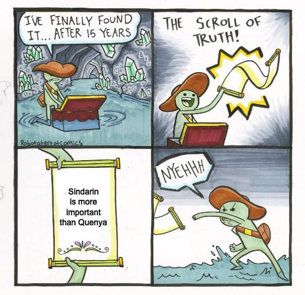

Neo Sindarin - A Stepwise Grammar

This is a compilation of notes I've made to use as reference for Neo-Sindarin. I've transformed my notes into a web page for easy access and put it here so everyone can use it.
All the information here has been taken from Eldamo, Ardalambion, the Vinyë Lambengolmor server, the Parma Eldalamberon and Vinyar Tengwar journals, and some gaps have been filled with stuff from the books A Fan's Guide to Neo-Sindarin by Fiona Jallings, and A Gateway to Sindarin by David Salo. Quite a few hypotheses and theories that guide this content were taken from the fine people from Vinyë Lambengolmor, especially the users Lanto, Elaran, Parmandil, Vyacheslav (Amalcarin), Rínor and Mithriel, among others.
This is a work in progress with no end in sight.
I'm trying to add some topics here left unexplored elsewhere.
I don't claim the content in this page to be correct. In fact, I've probably made many mistakes. I don't provide a lot of references to all things written here, as the purpose of this page is to be a guide and a reference, not a strict study of the Sindarin language.
In this page, the terms Sindarin and Neo-Sindarin are used interchangeably, but this content is chiefly about Neo-Sindarin. I am of the opinion that pure Sindarin is unusable, but if you'd like the best summary on pure Sindarin, check Ardalambion and Eldamo. My approach is not particularly conservative, but not too creative either. Neologisms are used here as regular words, because without neologisms I think Sindarin would be very limited. If the reader wants more context on specific words, please check them on Eldamo and Vinyë Lambengolmor.
I don't explore the conceptual developments of Sindarin here, I don't discuss details of Gnomish nor Noldorin, and I don't debate much of Quenya. Eldamo and Ardalambion are much better sources for that.
If you find any issues with this content at all, please open an issue on this GitHub Page, or give me a nudge on Vinyë Lambengolmor and I will look into it.
With all that in mind, I hope you enjoy this page and find this useful.
By the way, this page can be printed.
Telpefindele

1. Fundamentals
1.1 Pronouns
Independent personal pronouns
In Sindarin, we don't use traditional personal pronouns. That's because pronouns are typically represented as suffixes to conjugated verbs.
There are, however, independent pronouns, which can be used on certain circumstances (such as when a subject has been mentioned and needs to be referred to again):
Singular 1st person I/me ni 2nd person thou ci 2nd person (polite) le 3rd person he/she/it te Plural 1st person we me 2nd person you de 3rd person they ti Reflexive pronoun im
The last pronoun "im" means "self" ("same") and is used for all persons. It has a meaning of "I myself", "he himself", "you yourselves", and so on.
Pronominal endings
In Romance languages, among others, there is a concept known as "implied subject", or "understood subject". It might also be called "elliptical subject" or "zero subject".
An implied subject refers to a subject that is not explicitly stated but is understood from context, mostly because of how the verb is conjugated.
In English, one example is the "you" in imperative sentences, e.g. "go home!" → "[You] go home!".
In Sindarin, implied subjects are used at all times, except if absolutely required for the sentence to make sense. As in Romance languages, the verb is modified. In Sindarin, that means that a suffix is used.
The suffixes used with verbs are the following:
Singular 1st person I -n 2nd person thou -g 2nd person (polite) -l 2nd person (archaic) -dh 3rd person he/she/it (nothing) Plural 1st person we (not you) -f 1st person we (and you) -b 2nd person you -gir 2nd person (polite) -dhir 3rd person they -r
Example for all personal pronouns
Verb gala- ("to grow"):
I grow - galon Thou growest - galog Thou growest - galol (polite) Thou growest - galodh (archaic) He grows - gala we grow - galof we grow - galab you grow - galgir you grow - galodh / galodhir (polite) they grow - galar
Reflexive pronoun
In Sindarin, there is a reflexive pronoun im attested in multiple places, confirmed by Tolkien in notes from 1969.
It is a general reflexive usable with all persons, equivalent to "self":
e·chedhyd estanner im khazâd = "the dwarves called themselves khazâd"
Im can also be used as intensifier:
Melian nî redhin an im Ivann = "Melian was related to Yavanna herself"
1.2 To be
Copular system
The verb na-, "to be", exists on published texts only as imperative no (and some sketchy notes.)
A proper conjugation can be reconstructed based on evidence, but all reconstructions are entirely hypothetical.
The "to be" is implied most of the time by the sequence of words, via the copular system.
A copula is often a verb or a verb-like word, though this is not universally the case.
Most languages have one main copula (in English, the verb "to be"), although some (such as Spanish, Portuguese and Thai) have more than one, while others have none.
In English, in "to be" statements as in "you are wise", "Elrond is an elf", the verb connecting the subject (you, Elrond) to its predicate (wise, an Elf) is the copula.
Elvish languages do not use an evident copula word in such sentences: the subject and predicate are simply placed next to each other with no joining word (in linguistics this is referred to as a "zero copula").
Neo-Sindarin writers use an independent pronoun together with its predicate for "to be" statements:
me edhil = "we [are] elves" le hael = "you [are] wise" ti velig = "they [are] mighty" te vaethor = "he [is] [a] warrior"
In this system, the predicate noun or adjective matches the subject in number.
Many Sindarin writers agree that a predicate adjective is not mutated (see mutations below.) However, there is no evidence that this would be the case.
The problems with the copular system
The problems with the copular system
The copular system may sound simple, but it introduces three chief problems that leave Sindarin writers scrambling and divide opinion:
- There's no distinction between tenses
- There's no distinction between predication and attribution
- There's no distinction between predication of nouns and genitive constructions
Past and future tense copula
Paul Strack from Eldamo have tried to address this issue, which he explains on his page about the copula.
The issue can be illustrated with the following three sentences:
Elrond is there Elrond was there Elrond will be there
Translating that to Sindarin with a zero copula yield the exact same translation to all three sentences:
Elrond ennas
How can that be disambiguated? Paul analysed the na- verb and figured that Tolkien actually left clues as to what that would look like in the past tense and future tense. With some educated guesses, he suggested the use of a past tense copula nî and a future tense copula tho, which would yield the following translations:
Elrond ennas = "Elrond is there" Elrond nî ennas = "Elrond was there" Elrond tho ennas = "Elrond will be there"
Some say that tho doesn't fit with the later etymology of the future suffix, so the alternative would be to use natho instead:
Elrond natho ennas = "Elrond will be there"
Predication and attribution
A predication is basically a meaningful declarative sentence that is true or false. For example:
the elf is tall
An attribution refers to a word or word group, such as an adjective, that is placed adjacent to the noun it modifies without a linking verb. For example:
the tall elf
A predicative sentence in Sindarin requires the use of a zero copula. The issue is that the translation for both sentences is identical:
en·edhel dond = "the elf is tall" en·edhel dond = "the tall elf"
The solution that Sindarin writers came up with is to not mutate an adjective if it's being used in a predicative sentence:
en·edhel tond = "the elf is tall" → unmutated, predicative
en·edhel dond = "the tall elf" → mutated, attributive
However, some people think this is not a good solution because there is no evidence that Tolkien had ever used such a mechanic.
An alternative solution is to reverse the order of the predicate:
tond en·edhel = "the elf is tall" = "tall [is] the elf" (lit.) en·edhel dond = "the tall elf" = "the elf tall" (lit.)
Copula vs genitive
A genitive is a construction for expressing relations between two nouns. See the section below for more information.
In Sindarin, as explained below, a genitive is formed by positioning two nouns of a chain in sequence, next to each other, like so:
aran Moria = "[the] king [of] Moria"
The problem is that nouns can be used in predicative sentences, as much as adjectives do. The difference is that nouns don't mutate like adjectives when using zero copula, so the syntax for a zero copula with two nouns is identical to a genitive construction:
rhovan callon = "[a] beast [is] [a] hero" → copula rhovan callon = "[a] beast [of] [a] hero" → genitive
Fiona Jallings, author of A Fan's Guide to Neo-Sindarin, tried to tackle this problem by suggesting we use soft mutation for predicative sentences using the copula, using the opposite mechanic used with adjectives. This way it would be easy to disambiguate:
rhovan gallon = "[a] beast [is] [a] hero" rhovan callon = "[a] beast [of] [a] hero"
The problem with this approach, again, is that it's not attested anywhere. It's an invention. Another problem is that this doesn't work with nouns that start with vowels, as vowels don't mutate.
One possible solution is to use the definite article on the first noun to force a copula:
e·throvan callon = "the beast [is] [a] hero"
That occurs because the genitive only allows the article on the last noun.
To express "a beast is a hero", keeping it undefined and disambiguated, some suggest using a word for "one", or "some". These words act like adjectives, however. Example:
rhovan nodui callon = "beast some [is] [a] hero" rhovan er callon = "beast one [is] [a] hero"
There is no straight-forward solution to this problem.
Suggestions
To help disambiguate all the cases presented above, I suppose there are 3 best practices one should keep in mind:
a) use tense copulas
Paul Strack's solution for disambiguating the past, present and future tense copulas seems reasonable, and I think it should be used.
b) reverse adjectival predicates
Always reverse the adjectives in a predicative sentence to prevent making it attributive.
c) use the definite article to disambiguate from genitives
In a genitive chain, the article can only be used in the last noun of the chain, and it changes the definiteness of the whole chain. If one uses the article in the first noun of the chain, it has to be interpreted as a predicative sentence:
e·throvan callon = "the beast [is] [a] hero" → copula rhovan e·gallon = "[the] beast [of] the hero" → genitive
The frowned upon path
David Salo has developed a whole system for Neo-Sindarin back in the 1990s. Some of Salo's interpretations — especially where he "filled gaps" in vocabulary or grammar - are viewed today as inventions rather than canonical Tolkien material. Many aficionados and scholars have moved toward more conservative reconstructions, sometimes preferring more strictly text-based (i.e. Tolkien's own writings) approaches over Salo's expansions. His contributions to Neo-Sindarin were published in 2004 in his book A Gateway to Sindarin, and ever since, there has been at least 8 new editions of Parma Eldalamberon, containing a substantial amount of notes by Tolkien that revealed previously unknown details about Sindarin and rendering Salo's work outdated.
All that said, David Salo is a competent linguist, and his contributions to the phonetic development of Sindarin and verb system reconstruction were very valuable. One of the gaps in Sindarin that Salo felt like filling was a reconstruction of the "to be" verb, na-. Which, by the way, he used moderately in his translations for the Peter Jackson film adaptations.
His "to be" reconstruction is extremely hypothetical, but it looks like this:
na- ("to be")
Infinitive ..............: naw - be (OS nōbe)
Gerund ..................: nad - being
Imperative ..............: naw, no - be
Present participle ......: naul - being
Past passive participle .: naun - been
Perfect active participle: nóniel - having been
Present tense
1st person - naun - I am
2nd person - ? - thou art
2nd person - ? - thou art
2nd person - ? - thou art
3rd person - naw - he/she/it is
1st person - nam - we are
2nd person - ? - you are
3rd person - nar - they are
Past tense:
1st person - nónen - I was
2nd person - ? - thou wast
2nd person - ? - thou wast
2nd person - ? - thou wast
3rd person - naun - he/she/it was (non)
1st person - nónem - we were
2nd person - ? - you were
3rd person - nóner - they were
Future tense:
1st person - nathon - I will be
2nd person - ? - thou wilt be
2nd person - ? - thou wilt be
2nd person - ? - thou wilt be
3rd person - natha - he/she/it will be
1st person - natham - we will be
2nd person - ? - you will be
3rd person - nathar - they will be
As mentioned above, most enthusiasts have moved toward more conservative approaches, which means that Salo's paradigm is not widely used, and sometimes strongly opposed by most Neo-Sindarin users. It is also probably not compatible with Paul Strack's copulas, and since it has tiny evidence from any known Tolkien writings, it's considered an invention. However, it's undeniable that it fixes all problems with predication and attribution:
Elrond ennas = "Elrond is there" Elrond naun ennas = "Elrond was there" Elrond natha ennas = "Elrond will be there" en·edhel naw dond = "the elf is tall" en·edhel dond = "the tall elf" rhovan naw gallon = "[a] beast is [a] hero" → Salo's 'to be' rhovan callon = "[a] beast [of] [a] hero" → genitive
There is a whole discussion on whether this kind of paradigm should be used. One argument for its use is that Tolkien didn't write many texts in Sindarin in the first place, and it's easy to imagine that, at some point, were he able to work on this project further, he would need to create a "to be" paradigm sooner or later. The copula doesn't work all that well and it's counter-intuitive. One argument against its use is that a language is only useful when people understand what's being communicated. If one uses a paradigm not widely recognised, it's doomed to be an outlier. Many Neo-Sindarin writers try to preserve as much of Tolkien's original ideas for Sindarin, and unfortunately a "to be" paradigm has not been much documented to justify its use, so many people reject it. I think it depends on your audience. The Sindarin in the films seem to have worked, so although I don't use it much, I favour its adoption. This guide, however, will stick to the zero copula and ignore Salo's "to be" paradigm from this point onwards, so we can focus on the same flavour of Neo-Sindarin that is preferred by the majority of the community.
Existential verb
There is a mysterious verb da- that should be used for existential statements.
There are two different theories of what da- really is. But despite uncertainty about its etymology, there is practical agreement.
The origin of da-
The construction using that word appears in a single phrase from Tolkien's 1969 Late Notes on Verb Structure that seems to be a verb for existential statements:
inn đa v'im = "I have a good mind (to do so)" (lit.) "a mind there is in me"
This phrase was originally written as inn no v'im, with no changed to đa.
Theory 1: Eroded form of na- "to be"
The original alteration from no to đa suggests heavy erosion/mutation of the copula na-. However, this faces a significant problem: Tolkien's same 1969 notes explicitly distinguish existential "exist" (√EÑE) from copular "be" (√NA), stating NA was not used for existential statements in Quenya.
Theory 2: Distinct existential verb from root *√DA
đa may represent a separate Sindarin existential verb da- (equivalent to Quenya √EÑ), distinct from the copula. This aligns better with Tolkien's theoretical framework separating existential from copular uses.
da- is Sindarin's only attested means of making existential statements ("there is/exists").
Its semantics should be limited to the attested construction: "there is X in/at/on/under/etc Y".
It functions as an existential verb, not a copula, and cannot take direct objects.
Some scholars are cautious about recommending it for Neo-Sindarin due to its speculative nature, though others note there's no alternative.
There is no past tense formation, although a few have been proposed: daun for singular, and possibly doner/dóner for plural.
We also don't know it's plural inflection behaviour, nor whether it functions as a clitic (uninflected) or regular verb.
A proposed negative equivalent la (< LĀ) remains experimental.
Examples:
Singular: rach dha vi ñelaidh = "danger is ‹in the› trees" roch vorg da vi ñelaidh = "a big horse is ‹in the› trees" Plural: lyth dhail dar vin hant = "there are delicate flowers ‹in the› garden" rych dhar vi ñelaidh = "horses are ‹in the› trees" Past singular: rach dhaun vi ñelaidh = "danger was ‹in the› trees" lyth dhail daun vin hant = "there were delicate flowers ‹in the› garden" Past plural: lyth dhail dóner vin hant = "there were delicate flowers ‹in the› garden" rych vyrg daun vi ñelaidh = "big horses were ‹in the› trees"
Guidelines
The following guidelines may help elucidate how the copula is used:
-
The verb na- is ommitted in "to be" phrases:
Elrond ⏝ edhel = "Elrond [is] [an] elf"
-
Some people think it's best if predicate adjectives are not mutated, and some reverse the position of the adjectives:
en·edhel bain = "the elf [is] beautiful" bain en·edhel = "beautiful [is] the elf"
-
The predicate matches the subject in number:
in·edain velig = "the men [are] mighty (beleg-plural)" belig in·edain = "mighty [are] the men"
-
"To be" phrases use independent pronouns as subjects:
me edhil = "we [are] elves" -
Use past and future copulas nî and tho for "was" and "will be":
Elrond nî ennas = "Elrond was there" Elrond tho hí = "Elrond will be here" or... Elrond natho hí = "Elrond will be here" -
These past and future copulas are inflected with pronominal suffixes as appropriate:
nîn ennas = "I was there" thof hí = "we will be here" (Paul's future copula) nathof hí = "we will be here" (alternate future copula) -
Use da- for existential statements, and inflect for number:
lyth dhail daun vin hant = "there were delicate flowers ‹in the› garden"
1.3 Nouns
Nouns can be definite or indefinite, singular or plural.
Proper names are considered definite nouns. Other nouns are made definite by use of a definite article. There is a singular and a plural article.
Plural nouns go through vowel mutations. They can be identified by these vowels.
Plural formation
Plurals in Sindarin go through a mutation known as i-affection. This is the result of an ancient plural suffix ī which has been lost in modern Sindarin plurals.
There are 3 types of i-affection:
- internal i-affection
- final i-affection
- final i-intrusion
Internal i-affection
Occurs only in non-final syllables:
Non-final a → e: adan "man" → edain "men" Non-final o → e: onod "Ent" → enyd "Ents" Non-final u → y: tulus "poplar" → tylys "poplars" Other vowels in non-final syllables (e, i, y) do not mutate. Long vowels in non-final syllables (í, ó, ú, ý) do not mutate. Archaically: Non-final o → œ: golodh "Gnome" → gœlydh "Gnomes"
Final i-affection
Occurs only in final syllables:
Final a → e: narn "tale" → nern "tales" Final e → i: edhel "elf" → edhil "elves" Final ê → î: hên "child" → hîn "children" Final o → y: orch "orch" → yrch "orcs" Final u → y: tulus "poplar" → tylys "poplars" Other short vowels in final syllables (i, y) do not mutate.
Final i-intrusion
Happens when the last syllable ends in a single consonant:
Intruded a → ai: adan "man" → edain "men" Intruded â → ai: bâr "home" → bair "homes" Intruded ô → ui: thôn "pine" → thuin "pines" - monosyllables only Intruded û → ui: dûr "dark" → duir "dark (plural)" - monosyllables only Intruded au → oe: naug "dwarf" → noeg "dwarves" The long vowels î, ŷ in final syllables do not mutate. The vowels e/ê, o, u undergo final i-affection instead (to i/î, y, y).
Rare diphthongs plurals
Plurals of rarer diphthongs are the result of other phonetic effects:
Rare oe → ui: oew "evil deed" → uiw "evil deeds" Rare eu → ŷ: teuch "chip" → tŷch "chips"
The diphthongs ae, ei, ai, ui do not normally mutate in plurals, even in final syllables, but there are some unusual plurals where they do.
Diphthongs never mutate in non-final syllables.
Unusual plurals
Sindarin has a number of plural patterns resulting from more obscure sound changes:
-
Long or short ó/o derived from au resists mutations in non-final syllables, and might mutate to oe in final syllables of recognized compounds.
Ódhil → Ódhel (< ✶aw(a)delo) "Elf [who left for Aman]" Rodyn → Rodon (= raud + -on) "Vala"
-
The diphthong ai in final syllables might mutated to î (monosyllable) or i (polysyllable) depending on the ancient form of the word.
cair → cîr "ship" (✶kiryā) gail → gîl "star" (✶gilyā)
-
When a vowel mutates to i or y in its plural, it absorbs any preceding i, as in:
Miniel → Mínil, thalion → thelyn.
-
When a polysyllable ends in a short vowel, it generally follows the same mutations as in polysyllables ending in a single consonant:
-a → -ai -e → -i -o → -y -u → -y
-
One exception is when a final -a is derived from an ancient g > ʒ > -a, in which case in plurals:
-a → -i
-
When a monosyllable ends in a long vowel, it generally follows the same mutations as in monosyllables ending in a single consonant:
-â → -ai -ê → -î -ô → -ui -û → -ui
-
Diphthongs are immune to mutation except when in some monosyllables:
-êw → -îw -aw → -oe(w)
- Some Sindarin plurals are formed with the plural suffix -in, either a remnant of an ancient n preserved in the plural, or a generalization of this suffix applied to other situations.
- Sometimes the Sindarin plural becomes the base form, and a singular is derived from it using the suffixes -eg, -ig, -og or -od.
More info: Eldamo: S. unusual plurals.
Class plural
Sindarin has a second plural form using suffixes like -ath, -hoth or -rim.
êl "star" , elin "stars" , elenath "all stars". orch "orc" , yrch "orcs" , orchoth "all orcs". Nogoth "Dwarf", Negyth "Dwarves", Nogothrim "all Dwarves".
-ath is by far the most common class plural suffix, which seems to be the "default" suffix. It is the only one used with inanimate items like elenath "all stars" and sammath "(all of the) chambers".
-hoth is mostly used for "bad" groups given its connotation of "horde".
Some class plural suffixes -rim, -hoth and -waith are used for groups of people: orchoth, Rohirrim, Forodwaith. These mostly formed ordinary compounds.
The suffix -ath may preserve (or restore) ancient final endings to words that were lost in the singular form.
êl "star" → elenath "all stars". Feir "Mortal" → Firiath "(all) Mortals". gail "star" → giliath "host of stars". Perian "Halfling" → Periannath "Hobbits (as a race)". ceir "ship" → círiath "(all) ships". lhîn "pool" → lhiniath "(all of the) pools". sîr "river" → siriath "(all of the) rivers".
Dual remnants
Sindarin once had a dual inflection, used for pairs of objects, but in Sindarin this dual has fallen out of use because final vowels vanished in Sindarin.
However, there are remnants of a dual in fossilized forms.
lheweg "ears (of one person)" (*slasū > lhahu > lhau, spelled lhaw) Orgaladhad "Day of Two Trees (galadh)" samarad "two neighbours (sammar)" nobad "thumb and index finger as a pair, *(lit.) pickers" hent "two eyes (hen)"
1.4 Consonant mutations
Tolkien attempted to make languages that sound beautiful. Sindarin has mechanisms in place to prevent hiatuses and harsh consonantal encounters. That's why many of the words in Sindarin change sounds when spoken in a certain sequence.
Consonant mutations are where the ends and beginings of words interact. Mutations are closely related to Sindarin's phonetic history. These mutations are so frequent, in fact, that it is probably the most pertinent property of Sindarin for any enthusiasts.
Sindarin has about six types of consonant mutations, but the most important ones are: soft mutation, nasal mutation, and mixed mutation. The others are limited in scope, and are known as stop mutation, liquid mutation, and sibilant mutation.
These consonant mutations apply to the initial consonant of a word, either when closely following another word or in compounds.
Overview table
This is a summary of all the consonant mutations used in Neo-Sindarin:
hw- was the usual Neo-S orthography used before PE23 - Eldamo changed it to wh- after PE23, since it became clear that JRRT used wh- more oftenCategory Base Soft Mutation Nasal Mutation Mixed Mutation Voiceless Stops p-, t-, c- b-, d-, g- ph-, th-, ch- b-, d-, g- Voiced Stops b-, d-, g- v-, dh-, '- m-, n-, ñ- (or ng-) b-, d-, g- Nasalized Stops [m]b-, [n]d-, [n]g- m-, n-, ñ- (or ng-) m-, n-, ñ- (or ng-) mb-, nd-, ng- Sibilants and Spirants s-, h-, wh- h-, ch-, chw- s-, ch-, chw- h-, ch-, chw- Voiceless Liquids † lh-, rh- thl-, thr- thl-, thr- 'l-, 'r- Nasals m- v- m- m- Category Base Stop Mutation Liquid Mutation Sibilant Mutation Voiceless Stops p-, t-, c- ph, th, ch ph, th, ch ph, th, ch Voiced Stops b-, d-, g- b-, d-, g- v, dh, ' b-, d-, g- Nasalized Stops [m]b-, [n]d-, [n]g- nd, mb, n-g b, d, g [m]b-, [n]d-, [n]g- Sibilants and Spirants s-, h-, wh- s-, ch-, wh- s-, ch-, 'w- s-, ch-, wh- Voiceless Liquids † lh-, rh- l-, r- 'l-, 'r- lh-, rh- Nasals m- m- v- m-
Soft mutation
Soft mutation - aka lenition - aka vocalic mutation
Soft mutation is a systematic lenition (sound-softening process) of initial consonants triggered by certain grammatical environments, such as following the definite article or appearing in compounds.
It "softens" the consonant's articulation without changing its place of articulation, producing predictable alternations used to mark grammatical relationships.
p → b b → v gl → 'l
t → d d → dh gr → 'r
c → g g → - gw → 'w
m → v
(n)d → n lh → l s → h
(m)b → m rh → r h → ch
(n)g → ng hw → chw
f, l, n, r, th unchanged
Collisions between m- and b-
Please note that m- and b- both mutate into v-.
This is known as inflectional syncretism. So, for example, en·roch vain can mean both "the beautiful horse" and "the chief horse", because both bain (beautiful) and main (chief) mutate to vain.
In PE23 Tolkien suggested that this mutation shouldn't occur for m- words to avoid creating collisions.
However, I've made a check and found only 9 collisions that can be avoided by context and use of synonyms, which are listed bellow:
- bain (adj.) "beautiful; good, wholesome, favourable ↔ main (adj.) "prime, chief, pre-eminent" - balt (n.) "force, [ᴱN.] might" ↔ malt (n.) "gold (as metal)" - bang (n.) "staff" ↔ mang (n.) "butter" - both (n.) "fen, marsh; [N.] puddle, small pool" ↔ moth (n.) "dusk" - bâd (n.) "road, [N.] beaten track, pathway" ↔ mâd (n.) "meal" - bân (adj.) "fair, good, wholesome, favourable" (see bain) ↔ mân (n.) "departed spirit" - bíleb (adj.) "equal" ↔ míleb (adj.) "romantic" - bîl (n.) "likeness, similarity" ↔ mîl (n.) "love, affection" - bôr (n.) "heat" ↔ môr (n.) "dark(ness)"
And here are some near-misses, which are actually mb- words:
- baul (n.) "torment" --> [mb-] ↔ maul (n.) "flour" - baur (n.) "need" --> [mb-] ↔ maur (n.) "gloom" - bund (n.) "snout, nose; cape [of land]" --> [mb-] ↔ mund (n.) "bull"
I'd say that the worst offenders are bain/main, bíleb/míleb and bôr/môr. If context can't help with any of those, here are some alternative words:
bain ~ dail bíleb ~ ain môr ~ fuin moth ~ uial
If precision is of the utmost importance, replacements can't be used for some reason, and ambiguity is inevitable, simply don't mutate the offending word.
Nasal mutation
The nasal mutation is triggered by a preceding n (most often from the plural article in or prepositions like na(n)). It "nasalises" the initial consonant, producing these core effects:
p → ph cl → chl b → m
t → th c → chr d → n
c → ch tr → thr g → ng
pr → phr
dr → n-dr br → mr (n)d → nd
gr → n-gr bl → ml (m)b → mb
gl → n-gl (n)g → ng
gw → n-gw
lh → l h → ch
rh → r hw → chw rn → rdh (n becomes dh if preceded by r)
f, l, m, r, s and th remain
The preceding nasal itself often drops before the mutated consonant, except before vowels, resistant clusters, and before other nasals (especially with an).
(Salo, 75-76)Mixed mutation
The mixed mutation is a special pattern — mainly used after a debatable genitive preposition en "of" — that begins like soft mutation but then applies nasal effects once the lost historical vowel disappears, producing a more conservative outcome for b/d/g/m and fully restoring ancient mb/nd/ng.
This mutation is unlikely to be used in modern Neo-Sindarin en because the paradigm of the genitive has changed due to PE23 and the CEA. It is still used for a few prepositions, however, mainly the definite form of mi.
p → b s → h [m]b → mb
t → d h → ch [n]d → nd
c → g [n]g → ng
wh → 'w
lh → 'l
rh → 'r
Archaic:
wh → chw
lh → thl
rh → thr
Voiced stops (b, d, g) and nasals (m) are unchanged
Stop mutation
Stop mutation - aka hard mutation
The stop mutation is a rare Sindarin mutation triggered by prepositions that historically ended in -t or -d (notably ed "out of" and o "from"). The ancient stop vanishes before the following consonant, producing these effects:
p → ph (n)d → nd lh → l t → th (m)b → mb rh → r c → ch (n)g → n-g h → ch hw → chw b, d, f, g, l, m, n, r, s and th remain the same. final preposition ed before s, f, th becomes es, ef, eth.
The preposition's final t/d usually disappears, except before liquids (l, r, 'l, 'r, 'w) where it may survive. Stop mutation is attested only in theoretical notes and is considered optional in Neo-Sindarin.
Liquid mutation
The liquid mutation is a speculative and probably archaic Sindarin mutation triggered by a preceding l or r. It is attested only in a couple of "Túrin Wrapper" sentences and seems not to operate in later Sindarin.
Because most evidence elsewhere shows no such mutation after liquids, it is treated as an optional/archaic system in Neo-Sindarin.
p → ph b → v [m]b → b t → th d → dh [n]d → d c → ch g → ' [n]g → g Nasal m becomes v hw → 'w h → ch lh → 'l rh → 'r
Sibilant mutation
The sibilant mutation results from an ancient preceding s that caused various mutation effects before being lost.
The two best examples of sibilant mutation are the preposition o "about" and the conjunction a "and".
This mutation has two effects: First, the h which is the normal medial development of s reappears before vowels:
ah annon or a hannon = "and a gate" Athrabeth Finrod ah Andreth = "The Debate of Finrod and Andreth"
The other effect is that the voiceless stops become voiceless spirants (p, t, c → ph, th, ch) and voiced liquids l, r become voiceless lh, rh, where these are the normal phonetic effect of a historical s preceding p, t, c; l, r.
Though not mentioned by Tolkien, it is likely that older initial ch would be preserved rather than becoming h as it does initially, so that initial h would "mutate" to ch.
Initial voiceless stops become voiceless spirants: p → ph t → th c → ch Older initial ch is preserved: h → ch Voiced liquids become voiceless (possibly archaic): l → lh r → rh b, d, g, [m]b, [n]d, [n]g, s, wh, lh, rh, and m remain the same.
It is an obscure but plausible mutation for a(h).
1.5 Basic Verbs
Sindarin verbs are inflected for tense, number and person.
On PE23, there is an explicit statement saying that verbs should be lenited after the subject, which seem at odds with many attested forms. The current working hypothesis is that the lenition does not apply after complex subjects. So if the subject is composed by multiple words (e.g. Celebrimbor o Eregion) the following verb is not lenited. Otherwise, it apparently is.
There are two major classes of verbs: Basic and derived.
Basic (i-stem)
They are based on an unadorned primitive verbal root. They are also known as i-stem (because in the infinitive they have an -i added to them.)
Basic verbs are usually represented by stems ending in a consonant as in: ped- "to say, speak".
Monosyllabic basic verbs are lengthened: câr "do, make" (car-).
Then pronominal suffixes are added, the ancient aorist suffix i is preserved, which causes internal i-affection of the base vowel: cerin "I do" (car-). For many basic verbs, the vowel becomes e in an inflected present tense.
car-: present tense cerin "I do". heb-: present tense hebin "I keep". tol-: present tense telin "I come".
Because of the large number of collisions in the present tense, basic verbs are less likely to survive, and that's why we see derived verbs or prefixed verbs in Sindarin where their Quenya equivalents are basic verbs.
S. cova- "assemble" vs. Q. ócom- S. díhena- "forgive" vs. Q. apsen- S. echad- "shape out" vs. Q. cat- S. groga- "feel terror" vs. Q. ruc- S. hadhwa- "sea" vs. Q. har- N. nara- "tell" vs. ᴹQ. nyar- N. taetha- "fasten" vs. ᴹQ. tak- N. teitha- "write" vs. ᴹQ. tek- N. telia- "play" vs. ᴹQ. tyal- N. toba- "cover" vs. ᴹQ. top-
Example:
car- (to do) 1st person - cerin - I do 2nd person - cerig - thou dost 2nd person - ceril - thou dost (polite) 2nd person - ceridh - thou dost (archaic polite) 3rd person - câr - he/she does 1st person - cerif - we (not you) do 1st person - cerib - we (and you) do 2nd person - cerigir - you do 2nd person - ceridhir - you do 3rd person - cerir - they do
Derived (a-stem)
They are produced with some kind of verbal suffix. They are also known as a-stem.
Derived verbs generally appear with stems ending in a as in: teitha- "to write".
The infinitive is formed with the ending -d:
brenia- "endure" > breniad "to endure"
The 3rd person singular present tense is identical to the unadorned verb stem itself:
brenia- "endure" > brenia "endures, is enduring"
Pronominal suffixes make the final a of the verb change to o as in galon "I grow" (gala-).
breniar "(they) endure" breniab "we endure"
The ending -n for "I" causes the final -a to become -o instead:
brenion "I endure", dagron "I make war"
Example
gala- (to grow) 1st person - galon - I grow 2nd person - galog - thou growest 2nd person - galol - thou growest (polite) 2nd person - galodh - thou growest (archaic polite) 3rd person - gala - he/she grows 1st person - galof - we (not you) grow 1st person - galob - we (and you) grow 2nd person - galogir - you grow 2nd person - galodhir - you grow 3rd person - galar - they grow
Verbal nouns (gerund)
Verbal nouns function as both gerunds and infinitives, and behave in all respects like nouns except:
- they cannot be inflected in the plural and
- are not mutated when functioning as the infinitival object of another verb.
Basic verbs: add -ed
car- (to do) = cared (doing)
Derived verbs ending in -a: add -d
saeda- (to teach) = saedad (teaching)
It works as an object to another verb, like English infinitive. E.g.
nidhin mened = "I intend ‹to go›" melin saedad = "I love ‹to teach›"
A verbal noun does not undergo soft mutation.
A verbal noun may follow a verb, but an adverb may be in the middle as well. E.g.
te aníra ennas suilannad = "he desires there ‹to greet›" (ennas = there)
The gerund/infinitive itself can take a direct object, which does undergo the usual soft mutation. E.g.
aníra suilannad gírdan = "‹he desires› ‹to greet› [a] shipwright" (gírdan is mutated from "círdan")
2. Articles, Adjectives, and Basic Syntax
2.1 Articles
Sindarin has no indefinite article like English "a, an"; the absence of a definite article indicates that the noun is indefinite:
Edhel = "Elf" or "an Elf"
The definite article recommended is the one from the Common Eldarin Article (CEA), from 1969, first published in 2024 on PE23/135.
In notes on the CEA, Tolkien decided that the singular article was (mostly) e rather than i, taking the form en before vowels.
In CEA, the singular definite article was derived from an ancient emphatic article ✶inā, with a-affection resulting in e(n).
The singular form induces soft mutation on a following consonant, while the plural induces nasal mutation.
When preceding r-, the nasal -n becomes -dh.
e(n) + soft mutation for singular i(n) + nasal mutation for plural idh + r- for plural nouns starting in r-
It's a Neo-Sindarin convention to use a dash (-) or a dot (·) after the definite article. This started with Tolkien sometimes (but not always) doing it as a marker of its proclitic nature.
Examples:
e·cherdir = "the master" (herdir) en·arben = "the knight" i·thiw = "the signs/letter" (tiw < têw) in·emyn = "the hills" (emyn < amon) idh·Rodyn = "the Valar" i·ñgwaidh = "the shadows"
2.2 Adjectives
Adjectives generally appear after the nouns they modify. Then they undergo soft mutation.
Adjectives are inflected into the plural the same way that nouns do. They need to agree with their noun.
Neo-Sindarin should distinguish functions via word order. Positioning a predicative adjective before a (definite) noun to avoid ambiguity is permissible but not standard in normal colloquial speech.
edhel dond = a tall elf tond edhel = a tall elf (permissible but not standard) en·edhel dond = the tall elf e·dond edhel = the tall elf (not standard) tond en·edhel = the elf is tall
Predicative statements such as "an elf is tall" and "elves are tall" are ambiguous with attributive sentences.
edhel dond = "[an] elf [is] tall" or "[a] tall elf" edhil dynd = "elves [are] tall" or "tall elves"
The only way we can disambiguate is by reversing the position, so the copula is implied, as such:
tond edhel = "tall [is] [an] elf" tynd edhil = "tall [are] elves"
2.3 Numerals
Elves count to 12 instead of 10. That means the reader has to rewire the way s/he thinks about numbers in Elvish languages. The base-12 system is called the "duodecimal" system.
(Imagine that converting from the decimal system to duodecimal works like converting from kilometres to miles. A certain distance is the same, but it's represented by different numbers.)
However, even though Tolkien mentioned multiple times the duodecimal system, the words for the numbers in Sindarin clearly follow the decimal system.
It is implied that the decimal system predates the duodecimal, and it is also implied that Numenóreans prefer the decimal system, so my suggestion is to use the regular decimal designations of numbers for anything that doesn't suggest elvish origin, and a reconstructed duodecimal designation for other content.
Cardinal numbers
The decimal system
The decimal system is the same we use on our daily lives. These are the names of the numbers in decimal:
0 lad 10 pae 1 min 11 minib 2 tâd 12 ýneg 20 taphaen 3 neledh 13 paenel 30 nelphaen 4 canad 14 paegan 40 caphaen 5 leben 15 paeleben 50 lephaen 6 eneg 16 paeneg 60 enephaen 7 odog 17 paenodog 70 odophaen 8 tolodh 18 paedolodh 80 tolophaen 100 toch 9 neder 19 paeneder 90 nederphaen 1000 meneg
Note that toch, the word for a hundred, is pluralised for higher numbers, so 200 is written "tych tâd". The same goes for a thousand: 2000 is pluralised to "menig tâd".
The duodecimal system
The system of base 12 is called the duodecimal system. In that system, instead of using 10 digits, we use 12. After the algarism nine (9), we use, in English, dek and el.
In a duodecimal place system, based on the standards laid out by the Dozenal Societies of America and Great Britain (organisations promoting the use of duodecimal), ten (or dek) is written as A (or ᘔ), eleven (or el) is written as B (or Ɛ), twelve is written as 10, meaning "1 dozen and 0 units", instead of "1 ten and 0 units", whereas 12 means "1 dozen and 2 units" (i.e. the same number that in decimal is written as "14"). According to this notation, 50 means sixty (= five times twelve), 60 means seventy two or "half a gross" (= six times twelve), 100 means one hundred forty-four (= twelve times twelve) or "1 gross", 1000 means one thousand seven hundred twenty eight or "1 great gross", and 0.1 means "1 twelfth" instead of "1 tenth".
These are reconstructed names of the numbers in duodecimal:
0 lad 10 rast 1 min 11 rasnel 2 tâd 12 rastad 20 tadrast 3 neledh 13 rastnel 30 nelrast 4 canad 14 rastan 40 cadhrast 5 leben 15 rasthleben 50 lebedhrast 6 eneg 16 rasteneg 60 enegrast 7 odog 17 rasnodog* 70 odograst 8 tolodh 18 rasdolodh* 80 tolodhrast 9 neder 19 rasneder* 90 nederrast A pae 1A rastpae A0 paerast 100 host B minib 1B rastmin B0 minibrast 1000 hû
These are not widely used and very hypothetical.
The same way it works with decimals, the words for gross and great gross are pluralised. So 200 is "hyst tâd" and 2000 is "hui tâd".
Writing cardinal numbers
In English, to say the name of a larger number, we break it into thousands, hundreds, tens, and ones. In Sindarin, this is done backwards.
Instead of saying "twenty one", one should say "one and twenty". Instead of "six hundred thirty two", one says "two thirty six hundred".
In decimal system, reversing the order is enough. In duodecimal system, things get different even in English.
Examples:
It's important to stress here the equivalences:
70012 in duodecimal is exactly the same amount of a thing as 100810 in decimal.
"70012" means 7 gross, and a gross is 14410. 14410 × 7 = 100810.
The number is named differently, it has different algarisms, but it's the same amount.
Ordinal numbers
Ordinal numbers use the suffix -ui. We don't have any evidence of ordinal numbers above 10, but we can make an educated guess.
Decimal: 0 -- 10 paenui 1 minui 11 minibui 2 tadui 12 ýnegui 20 taphaenui 3 nelui 13 paenelui 30 nelphaenui 4 canthui 14 paeganthui 40 caphaenui 5 levnui 15 paelevnui 50 lephaenui 6 enchui 16 paenchui 60 enephaenui 7 othui 17 paenothui 70 odophaenui 8 tollui 18 paedollui 80 tolophaenui 100 tochui 9 nedrui 19 paenedrui 90 nederphaenui 1000 mengui Duodecimal: 0 -- 10 rastui 1 minui 11 rasnelui 2 tadui 12 rastadui 20 tadrastui 3 nelui 13 rastnelui 30 nelrastui 4 canthui 14 rastanthui 40 cadhrastui 5 levnui 15 rasthlevnui 50 lebedhrastui 6 enchui 16 rastenchui 60 enegrastui 7 othui 17 rasnothui 70 odograstui 8 tollui 18 rasdollui 80 tolodhrastui 9 nedrui 19 rasnedrui 90 nederrastui A paenui 1A rastpaenui A0 paerastui 100 hostui B minibui 1B rastminui B0 minibrastui 1000 hûthui ?
Literature on the subject of Sindarin ordinal numbers is patchy at best. I'll add more information here when I have any.
Word order of numerals
Numerals always come after the nouns, in an adjectival position. Both cardinal and ordinal numbers. Examples:
beraid dâd = "two towers" andrann dadui = "second age" cyrf nedir nan edain = "nine rings of men" cerenyr chost = "gross years" (144 years)
2.4 Sentence Structure
Direct objects
Direct objects are a word or phrase in a sentence referring to the person or thing receiving the action of a transitive verb.
For example, in English, in "mail the letter and call him", "the letter" and "him" are direct objects.
In Sindarin, direct objects undergo soft mutation. Examples:
lasto beth lammen = "listen [to the] word (peth) [of] ‹my tongue›" cenin 'aladh = "I see a tree (galadh)" annon higil adan = "I give a man (adan) a knife (sigil)"
Word order
Sindarin normally places the subject first, the verb second, and the direct object third. The indirect object follows the direct object. This gives the basic pattern:
Subject – Verb – Direct object – Indirect object
Example:
e·vaethor ón e·ledil eni chothron = "the warrior gave the key ‹to the› captain"
- Subject: the warrior
- Verb: gave
- Direct object: the key
- Indirect object: to the captain
This pattern can be called S-V-DO-IO or SVO for short (DO and IO are merged into O "object".)
SVO is the standard and only basic word order explicitly described for Sindarin. Yet there are exceptions.
Behaviour and exceptions
The indirect object may be moved
The indirect object is often marked by a presposition, giving it flexible placement.
an Edain ónen estel = "to the Edain ‹I gave› hope" eni chothron e·vaethor ón e·ledil = "‹to the› captain the warrior gave the key"
The direct object is marked by lenition
The direct object undergoes soft mutation whether it appears after the verb or is fronted for emphasis. Because of this mutation marking, the direct object also has limited freedom to move.
im Narvi hain echant san → "that", singular sain → "those", plural of san hain → "those", mutated form of sain Literal translation: myself Narvi those made
The imperative has its own word order
The Sindarin imperative is used for commands and for the expression of a wish (cuio i·Pheriain anann = "live the Halflings long"). It follows VOS.
In the imperative, the subject follows the verb, and the verb always appears at the beginning of the phrase.
See more details at the imperative section of the page. Example:
pedo mellon = "speak, friend" edro en·annon, Aragorn = "open the gate, Aragorn"
Examples
Other word order patterns
Adjective After Noun
Unlike English, adjectives follow the nouns they modify rather than preceding them. This is one of the major differences from English word order.
bas ilaurui = "daily bread" (lit.) "bread daily"
Genitive (Possessive) After Noun
Genitive expressions place the possessing/qualifying noun after the primary noun, in the same position as adjectives.
aran Moria = "king [of] Moria"
Compound Words: Modified + Modifier
In compounds, the modifying element typically appears after the element being modified, following the adjective-after-noun pattern.
aeluin = "blue lake" → ael "lake" + luin "blue"
Preposition Before Noun
Like English, prepositions precede the noun phrase they qualify.
n'orod = "to the mountain"
Relative Pronoun Before Subordinate Clause
Relative pronouns precede their subordinate clauses, similar to English structure.
en·adan i padrast = "the man who walked"
2.5 Adverbs
An adverb is a word that modifies a verb, an adjective, or another adverb, usually by describing how, when, where, or to what extent something happens. For example, in "she spoke softly," "softly" tells us how she spoke.
Adjectives as adverbs
Sindarin possesses a handful of "true adverbs" (e.g. mae "well", palan "far", sí "here", hí "now"); however, it also employs adjectives adverbially, but only when the adjective can plausibly describe the subject of the verb.
So for example, when Glorfindel says noro lim "run swift", in The Lord of the Rings, he is using an adjective, "swift", which can only be used if the subject (in this case Asfaloth, a horse) can be swift.
When the adjective can't apply to the subject, Sindarin instead uses prepositional formations, as for example in anann "for long."
General rules of adverbs
The adverb's position is flexible for emphasis.
Where an adverb precedes a verb, the verb goes through soft mutation.
Maglor eno badra vi Ennor = "Maglor still walks in Middle-earth" padra- > padra > badra
Adverbs following verbs are not lenited:
Maglor reniast palan vi Ennor = "Maglor wandered far in Middle-earth"
Adverbs modifying adjectives precede and lenit these adjectives:
o menel palan-diriel = "from heaven far-gazing"
tiriel > diriel
Adverbs modifying a noun probably undergo soft mutation, so:
en·ost vae-garnen = "the well-made city" "well" = mae "made" = carnen > garnen
Adjectives acting as adverbs are not lenited either:
lhûth bennas bregol or then = "[a] spell fell suddenly over him"
Known adverbs
2.6 Negation
Negation is a controversial topic because Tolkien kept changing his mind on how it worked.
There are two chief forms of negation in Sindarin: u-negation and la-negation. There's also a third form known as baw-negation, which mainly concerns imperatives, and the neologism law for "not".
Description
U-negation
U-negation began in early Gnomish, then it reappeared in Early Noldorin and became the Sindarin negative prefix ú- in the 1930s–50s, sometimes with an added "bad/unpleasant" sense.
The most complete system was described in 1959, where ú- served as the general verbal negator, inducing soft mutation, forming quasi-participles, creating adjectives of impossibility (with -ui), and underlying an archaic negative verb (ui / ûn) that could act as a negative copula.
In 1969, Tolkien briefly rejected u-negation, restoring la-negation for Quenya, and reinterpreting ú- as "bad/difficult/impossible".
Under that system, úchebin would mean "I cannot keep" rather than "I do not keep". But a later note reverses this again: "Back to ú ... ū should be negative particle", effectively restoring u-negation.
Therefore this is recommended for Neo-Sindarin.
La-negation
La-negation originated from primitive syllabic ḷ and appeared early as prefixes like il- or al- meaning "no/not" or "opposite", sometimes shifting form before labials.
It largely disappeared in Early Noldorin, then re-emerged in the 1930s as al- "no, not", which survived in alfirin "immortal".
Tolkien later rejected and then briefly restored la-negation in 1969, but he never provided any Sindarin examples of verbal negation with it, leaving its function mainly as a negative prefix of variable strength.
Baw-negation
Baw-negation was introduced in 1959 from √BĀ/ABA "refuse, forbid" as a distinct type of negation marking refusal or prohibition rather than denial of fact.
This is actually two forms of negation.
The first form is avo, and it comes from avad, meaning "refusal, reluctance".
The second form is baw, derived from the verb boda-, meaning "to ban, prohibit".
Avo can be used with imperative verbs ("don't do [that]"), its prefixed form av-, and personalized forms like avon "I won't" and avam "we won't".
These always express the speaker's refusal, while commands addressed to others use baw or avo/av-. This system remained stable even when Tolkien vacillated on la- vs u-negation.
Recommendation
For Neo-Sindarin, it's best to use the attested u-negation (ú- with soft mutation) for verbal negation, since it is well described and appears to have been restored by Tolkien after 1969, whereas la-negation has no Sindarin verbal examples and relies partly on neologisms (e.g., law "no, not").
La-negation is still retained as a neutral negative prefix (especially al-).
For negatives of volition, Neo-Sindarin should follow Tolkien's attested system: baw! for prohibitions, avo + mutated imperative for "don't", and avon/avof for "I/we won't", reserving verbs like boda- "refuse" when the refusal is attributed to someone else.
The best-known Sindarin example is ú-chebin estel anim "I have kept no hope for myself".
Here, ú- is a neutral verbal negator. Similar prefixes appear in later vocabulary (Udalraph, Úmarth, úgarth).
The most complete description comes from Tolkien's 1959 "Definitive Linguistic Notes", where u-negation is systematic:
La-negation is so called based on the LA root, but in Sindarin it shows up as al-. It's recommended to use it with anything that's not a verb.
alphen = pronoun "nobody" alphirin = adjective and noun "immortal" alnad = pronoun "nothing" alhad = pronoun "nowhere" alnûr = adjective "not deep, shallow"
Use baw-negation for negative imperatives. These are always negated from the perspective of the speaker.
Always refuse a command with av-. Prohibit with both av- and baw:
avo garo! = "don't do it!" avgaro! = "don't do it!" avo vado = "don't eat" avon = "I won't" avam = "we won't" baw! = "don't!" baw vado! = "don't eat!" baw veno! = "don't go!"
Finally, the word law can be used as a negative particle before other words:
law ill hain idh reniar líthennin = "not all those who wander [are] lost"
2.7 Yes and No
There are no examples of "yes" and "no" in the Sindarin corpus.
The general recommendation is to use the u-negation as a standalone word û for "no", and a neologism naw for "yes".
Naw is based on Quenya ná.
There is a case for using lá as a word for "no", but based on empirical experimentation speaking Neo-Sindarin, people reportedly mistook yes for no too often to be considered a realistic choice.
2.8 Conjunctions
A conjunction is a part of speech that connects words, phrases, or clauses. It shows the relationship between the connected elements, such as addition, contrast, or cause.
It might overlap with other parts of speech.
There are only a handful of conjunctions attested in Sindarin, and a few neologisms:
Dealing with lists of things
Tolkien has stated that the placing the word "and" before the final item of a list represents a discontinuity in Quenya. (PE17/70–1)
The same concept applies to Sindarin, as can be observed in a version of the King's Letter from the early 1950s:
Iorhael, Gelir, Cordof, Baravorn ionnath dîn = "Frodo, Merry, Pippin, Hamfast ‹his own› sons"
3. Prepositions
3.1 Overview
Prepositions are parts of speech that show relationships between words in a sentence.
They often indicate where, when, why, or how something happens.
In Sindarin, when a preposition is used adverbially and follows immediately after a verb or the zero copula, it undergoes soft mutation.
All prepositions that end in a vowel cause soft mutation.
Most that end in a consonant also cause soft mutation, but some prepositions that ended in a consonant back in Common Eldarin cause different mutations.
Prepositions are generally proclitic, so e.g. mîn and trî and mîg can be shortened.
Definite prepositional forms
Prepositions typically deal with indefinite objects. For example, "mi ham" translates to "in a room". To mark the room as a particular room, the preposition (mi) requires an article.
In both the singular and the plural, the article may appear as a suffix appended to prepositions. This suffix normally has the form -n or -in, but it might look a bit different depending on phonetic rules.
3.2 Prepositions of space
Prepositions of location
Prepositions of Direction / Goal (movement toward)
Prepositions of Source / Origin (movement away from)
Prepositions of Path / Boundary / Route
3.3 Prepositions of time
3.4 Prepositions of association, means, and possession
3.5 Prepositions of comparison
3.6 Prepositions of exclusion and opposition
3.7 Similar prepositions
Some prepositions are very similar and may even have the same form, but mean different things. Here is a breakdown of the apparent collisions.
N(a) vs na(n)
There are two prepositions that can cause ambiguity as both can be written as na. We distinguish them by how they behave when succeeded by an object starting on a vowel.
N(a)
n(a) is an allative preposition, indicating movement towards something. It is regularly elided to n' before vowels and it triggers soft mutation.
Avoid using n(a) for meanings of time, unless it's to indicate the end of a waiting period, as in na vedui, "at last".
This preposition should not be reduced before a "lost g."
Examples
Thingol allu adhul na Dhor-Rodyn = "Thingol never returned to Valinor" athar dhoer lend n'Eriador = "beyond leagues wide of Eriador" na 'aladh = "towards [a] tree"
Na(n)
na(n) is a prepositional genitive, used for partitive relationships. It becomes nan before vowels and triggers nasal mutation.
It indicates a sense of possession or having a certain feature.
Example
Melian vaea, na nûr idh·Rodyn = "Melian was a Maia, of [the] race [of] the Valar" e·chên ereb nan Aragorn = "the only child of Aragorn"
The three o prepositions (about / away from / origin)
There are three different prepositions that have partially coalesced into o:
- o meaning "about"
- o meaning "away from" as a movement - away from / due to / from someone or something as a point of departure - has an ablative function
- o meaning "from" as origin - from inside / out of / originating in - is used for the genitive of origin
This o/od/ui tripartite set is not interchangeable! They mean vastly different things and should be dealt with carefully.
"About"
The easiest one to discern from the others is the first, meaning "about".
Before vowels, this o becomes oh and before consonants, it uses the sibilant mutation. It doesn't change with a definite article.
Before a word starting with an s-, it becomes os. Examples:
o lhoss = "about snow", or "concerning snow" (snow = "loss")
oh edhil = "about elves", or "concerning elves"
os sîr = "about rivers", or "concerning rivers"
oh i·silevril = "about the silmarils", or "concerning the silmarils"
"Away from"
The second o is an ablative function. Ablative is used to indicate motion away from something.
This preposition causes stop mutation. The definite version of it morphs into od.
This preposition can be compared to Russian от (ot). It typically means movement or relation away from a point. It implies distance or separation, often from a person, object, or source of influence. Examples:
meno o nin! = "go [away] from me!" ann o mellon = "[a] gift from [a] friend" (source/person) naeg od e·dhram = "pain from the blow" (cause)
"From" (origin)
The last o is used for a genitive function of origin.
This preposition causes soft mutation. The definite version of it morphs into uin as it absorbs the article.
This preposition can be compared to Russian из (iz). It implies that the subject starts inside a place or situation and moves outward. Examples:
Arwen o Imladris = "Arwen is from Rivendell" (originating from within the place)
te anu ui vâr = "he went from the house" ("he left the house") ("house" = bâr) *
echannen o daw = "made from wood" (the material out of which something is made) ("wood" = taw)
* anu is past tense 3rd person of gwae- "to go, depart"
4. Intermediate grammar
4.1 Participle
Sindarin divides its participles into active participles and passive participles.
For intransitives or natural processes ("to grow", "to fall"), in a sentence like "the grown maiden", active participles are more adequate, because using the passive would wrongly imply an external agent (something "grew" the maiden).
The active participle is split into past and present participles. The passive participle has merged both functions into the past passive participle, so there's only one type.
Active participles
Sindarin has two active participles that behave like adjectives: a present/continuous participle in -ol and a past/perfective participle in -iel.
The present participle (-ol) historically comes from an ancient continuative marker combined with an active participial ending, giving the sense "currently doing."
The past participle (-iel) is derived from the old Common Eldarin perfect plus the same participial suffix, producing the sense "having done."
Tolkien originally used forms like tíriel as present participles, but later reinterpreted them as perfective ("having gazed"), and created new present forms (e.g., tiriel) to contrast with them. The result is a system where -ol marks ongoing action and -iel marks completed action, both ultimately descending from ancient participial formations.
Present Active Participle
Use present active participles as adjectives describing someone who is currently doing the action. Example:
en·adan anu na vâr dín norol = "the man went to his house running" Aragorn, hennol barf, egin Voromir anglennol = "Aragorn, reading a book, saw Boromir approaching"
The mechanics of how to form it are simple:
Basic verbs
Add -ol to the verb stem.
cen- → cenol = "seeing" car- → carol = "doing" nor- → norol = "running"
Derived verbs (ending in -a)
Replace -a with -ol:
gala- → galol = "growing" lasta- → lastol = "listening" tiria- → tiriol = "gazing" (attested via mutation: diriel)
Mutation
Participles behave like adjectives: they soft-mutate after a prefix (garol from carol after ú- → úgarol, rhugarol, etc.)
Past / Perfective Active Participle
Use past active participles as describing someone/something that has completed an action. Example:
e·'wend 'óliel = "the maiden ‹has grown›" Aragorn, henniel e·dain, evin chestad Voromir - Aragorn, ‹having read› the letter, went to seek Boromir"
Basic verbs
Add -iel, with vowel-lengthening of the base vowel:
car- → córiel = "having done" cen- → cíniel = "having seen" nor- → núriel = "having run"
Derived verbs (ending in -a/-ia)
Replace -a / -ia with -iel.
If the verb stem does not end in a consonant cluster, lengthen the base vowel.
If the stem does end in a cluster, no vowel lengthening - instead apply i-affection if expected:
gala- → góliel tiria- → tíriel lasta- → lestiel ortha- → erthiel
Plural Forms
Most Neo-Sindarin practice do not pluralise active participles. Thus:
adan norol = "running man" edain norol = "running men"
Special Note: Short-vowel tiriel
tíriel = past participle "having gazed" tiriel = present participle "gazing" (a special form created for poetic and phonological reasons).
This does not affect the general rules above.
Passive participles
Passive participles describe a state resulting from an action ("slain", "broken", "closed").
They are used as adjectives:
en·adan nangen = "the slain man" (from dag- [nd-]) in·edain nengin = "the slain men"
Basic verbs
Passive participles do not use the (modern) past tense. They are always built from the ancient nasal-infixed past stem, which survives only in the passive.
The mechanic is rather phonetic: insert /n/ after the stem consonant and add -en; the exact result depends on the final consonant. Examples:
Final consonant Passive participle pattern Example b mm + en heb- → hemmen "kept" d nn + en mad- → mannen "eaten" dh nn + en badh- → bannen "judged" f/ph mm + en raph- → rammen "seized" g ng + en dag- → dangen "slain" l ll + en hol- → hollen "closed" n nn + en cen- → cennen "seen" r rn + en tir- → tirnen "guarded" th nn + en path- → pannen "smoothed" v mm + en lav- → lammen "licked" w usually nw → -nwen gwae- → gwanwen "departed"
Derived verbs (ending in -nna)
These often collapse instead of forming -nnannen:
onna- → onnen "born" danna- → dannen "fallen"
Plural Forms
Passive participles agree in number with their noun. Attested examples:
gwanwen → gwenwin onnen → oennin (later ennin, Ebennin)
4.2 Personal pronoun paradigm
Sindarin has five basic sets of pronouns: independent, subject, object, dative and possessive:
Independent Subject Object Dative Possessive
1st sg. ni I/me -(o)n I nin me annin to me nín my/mine
2nd sg. ci thou -(o)g thou cin thou achin to thee cín thy/thine
2nd sg. (polite) le you -(o)l you len you allen to you lín your(s)
3rd sg. te he/she - he/she ten him/her athen to him/her tín its/his/her(s)
1st pl. me we/us -(o)f we men us ammen to us mín our(s)
2nd pl. de you -(o)dhir you den you annen to you dín your(s)
3rd pl. ti they/them -r they tin them athin to them tín their(s)
Reflexive im self - - anim to self în * own
Independent and subject pronouns were already explained earlier in this page.
Handling ambiguity with independent pronouns
Independent pronouns do what it says on the tin: they are independent words that precede the verb. They are not used in Sindarin unless strictly necessary.
There is no grammatical gender in Sindarin, so the third person singular can be ambiguous. The problem has to be solved the same way a language like Finnish handles it. Example:
Thingol looked at her. She spoke no word.
That would be translated to:
Thingol egin na den. Te agarfant û beth.
In this example, te can mean both Thingol or the woman he looked at. In the story we know by context the woman is Melian, but the second sentence is still ambiguous. To fix it the subject needs to be explicit:
Thingol egin na den. Melian agarfant û beth. = "Thingol looked at her. Melian spoke no word."
Subject pronouns
The subject form is a suffix used with verbs that do not have an explicit noun as a subject.
The (o) in the pronoun list above indicates that derived verbs change their final a to o as in:
en·adan anna = "the man gives"
vs
annon = "I give"
Object pronouns
The object forms are most often used for direct objects of verbs. That means it goes through the usual soft mutation.
Object pronouns are also known as oblique pronouns.
They are also used as the object of prepositions and imperatives.
Lúthien mabent din = "Lúthien asked them" (tin) Thingol egin na den = "Thingol looked at him/her/it" (ten) dambedo nin! = "Answer me"
Dative pronouns
Sindarin has a few attested words that play the role of dative pronouns. They seem to be the preposition an + the object pronoun. The reflexive pronoun is also used.
ón annin "‹he gave› to me" guren bêd enni "‹my heart› tells [to] me" annon edhellen, edro hi ammen "elvish gate, open now for us" ú-chebin estel anim "I have kept no hope for myself"
Possessive pronouns
See 5.2 Possessive below.
4.3 Demonstratives
Demonstrative pronouns are words like "this," "that," "these," and "those" that point to specific things or people, replacing nouns in a sentence. Demonstrative adjectives use the same words but modify nouns instead, appearing directly before them, such as in "this book" or "those cars."
In English the demonstrative object pronouns and demonstrative adjectives are the same, and most Neo-Sindarin writers assume this is also true of Sindarin.
We have very little evidence of demonstrative pronouns in Sindarin, but the Moria inscription has two of them. A somewhat complete paradigm can be guessed based on those.
For more information on how these pronouns came to be, check Eldamo.
Independent Object/Adjective Dative
near singular se "this" sen "this" assen "to this"
remote singular sa "that" san "that" assan "to that"
near plural si "these" sin "these" assin "to these"
remote plural sai "those" sain "those" assain "to those"
se gwista illad = "this changes everything" e·dass hen nî bannen achin = "this task was put ‹to thee›" anno annin e·ledil assen fo 'waeg = "give me the key to this before ‹you leave›" egínen ha = "‹I saw› that" e·vrôg han borg = "that bear [is] big" padrant assan sad = "‹(s)he walked› to that place" si i·ñgern nín = "these [are] my possessions" i·ñguin hin rhui = "these geese are evil" glennannen assin duir = "‹I travelled› to these lands" sai i·ñgern nín = "those [are] my possessions" i·ñguin hain rhui = "those geese are evil" glennannen assain duir = "‹I travelled› to those lands"
4.4 Interrogative
Questions in Sindarin simply look like regular indicative statements with a questioning intonation, the same way many Romance languages deal with it.
e·vrôg vorg = "the bear [is] big" e·vrôg vorg? = "[is] the bear big?"
Interrogative pronouns
There are no attested forms of interrogative pronouns, except for ma/man in the mysterious Túrin Wrapper:
man agorech? = "what have we done?"
Most Neo-Sindarin writers assume ma/man can mean both "what" and "who".
A paradigm for Neo-Sindarin interrogative pronouns has been proposed by Fiona Jallings and improved by Paul Strack.
The words are formed by using the question word ma/man as a prefix followed by prepositions. The result is thus:
an + man = amman "for what, why" mi + man = mivan "in/at what, where" na + man = navan "at/to what, where, whither" o + man = oman "from what, whence" (use stop mutation) mo + man = movan "by means of what, how" man + lû = mallú "what time, when"
Eldarin languages have wh-movement. Wh-movement is a syntactic process in which a wh-word (e.g. who, what, which, where, why) is displaced from its original position to the front of a clause, typically to form a question or a relative clause. Examples:
- Declarative: You saw what.
- With wh-movement: What did you see?
Therefore, the reconstructed pronouns are typically positioned at the start of the sentences.
Object mutation shouldn't apply to these pronouns. There are several reason, but the most important one is because mutations are triggered by syntactic relations, and the syntactic relations of wh-words in a language with wh-movement is not the same as it would be without movement. That said, most of these pronouns also start with an m-, and they start sentences, so it's safe to simply avoid mutations.
If the question with the pronoun happens to be a subordinate question, just use commas. (The meaning changes slightly.) Example:
man cenig min feleg? = "what ‹you see› ‹in the› cave?" cenig, man da min feleg? = "‹you see›, what is ‹in the› cave?"
Examples of other pronouns:
4.5 Relative Pronouns
Attested forms of relative pronouns are scant: we have i, ai, and ir.
Of these, the only one that seem consistent enough for use on Neo-Sindarin is i, which has the meaning of "that", "who(m)", "which."
The other two are questionable. For example, ir had a Quenya equivalent íre that was replaced by yá. Everything else are, naturally, Neo-Sindarin reconstructions.
Restrictiveness
The relative clause in Sindarin sometimes causes soft mutation or nasal mutation, depending on plurality, and sometimes it doesn't. While the reason why that happens is unknown, the best hypothesis is because of restrictiveness.
A restrictive relative clause gives essential information about the noun. Without it, the meaning changes. Example:
The book that recounts the tale is thick. (We need the clause to know which book.)
In the other hand, a non-restrictive relative clause adds extra, non-essential information. The sentence still makes sense without it. These clauses are usually set off with commas.
The king, who lives in Armenelos, went to Lindon. (The clause just adds extra detail; we already know which king.)
So, the mutation only occurs when the clause is a restrictive relative clause.
And it should cause no mutation when it's a non-restrictive relative clause.
Examples:
Restrictive singular (mutates): en·barf i drenar e·bent dûg = "the book that recounts the tale [is] thick" Restrictive plural (mutates): in·pherf i threnerir e·bent duig = "the books that recount the tale [are] thick" Non-restrictive (no mutation): en·aran, i bâr vi Armenelos, evin an Lindon = "the king, who lives in Armenelos, went to Lindon"
Recommendation
To fill the gap in relative pronouns, it's suggested one use relative pronouns derived from CE ✶ya with case endings, largely paralleling Quenya.
Note that the primitive y yields an i in Sindarin. But that i doesn't behave as a vowel. In this case we parallel it to a j instead, and there's a class of pronouns known as "j-pronouns".
"The j-pronouns developed naturally into relatives. In this use the bare vocalic form i was most used in Eldarin; or else the bare vowels: e personal, a impersonal." - PE23/114
Based on Quenya, the following pronouns can be deduced:
Subject/object relative: i When ...: io ⪤ Q. yá Where ..: ias ⪤ Q. yasse Whence .: ias Whither : ias or... Whither : ian ~ Q. yanna How ....: ial ~ Q. yalle To whom : ian (dative)
Examples:
Which: sad i aen nî belt = "[a] place which should be strong" When: io Ardhon phain aw îdh = "when [the] World all had peace" Where: Sarn Athrad, ias oeth chídas ab = "Sarn Athrad, where battle after happened" Whence: in·Edhil istasser ias te odul = "The elves knew whence he came" Whither: in·Edhil istasser ias te evin = "The elves knew whither he went" in·Edhil istasser ian te evin = "The elves knew whither he went" How: Thingol 'erias o ial adabatha anim mbâr = "Thingol pondered about how ‹he will build› [him]self [a] dwelling" To whom: Thingol, ian i·Naugrim agórer Venegroth = "Thingol, ‹to whom› the Dwarves made Menegroth"
4.6 Comparative
Comparative grammar is not well attested nor described in Sindarin, but a methodology has been developed to achieve such an effect.
The way to compare things in Neo-Sindarin involves using intensive and superlative prefixes. This system has been first proposed by Thorsten Renk, and it has been polished by Fiona Jallings and Paul Strack.
Intensive
To build an intensive adjective, we use the prefix an-. This prefix modifies the word in the following ways:
- If the original word starts on a consonantal i-, the prefix changes to ein- and the rest goes through i-affection
- If the original word has a regular -i-, the prefix goes through i-affection
- Otherwise, use nasal mutation
- Then add medial development
Here is it in action:
Superlative
To build a superlative adjective, we use the prefix ro-. The process is similar to intensive, yet much simpler:
- Use soft mutation
- Add medial development
Examples:
Comparisons
These intensive and superlative words work just like regular adjectives.
To make a comparison, use the preposition athar (beyond):
Aragorn veleg athar Boromir = "Aragorn [is] strong beyond Boromir" = "stronger" Aragorn ammeleg athar Boromir = "Aragorn [is] stronger beyond Boromir" = "much stronger" Aragorn roveleg athar Boromir = "Aragorn [is] strongest beyond Boromir" = "way stronger" Galadriel hael athar Elrond = "Galadriel [is] wise beyond Elrond" = "wiser" Galadriel anhael athar Legolas = "Galadriel [is] wiser beyond Legolas" = "much wiser" Melian rohael athar Galadriel = "Melian [is] wisest beyond Galadriel" = "way wiser"
5. Grammatical Constructions
5.1 Genitive
In grammar, a genitive construction or genitival construction is used to express a relation between two nouns such as the possession of one by another, or an attributive relationship. A genitive construction involves two nouns, the head (or modified noun) and the dependent (or modifier noun).
Sindarin's most used style of genitive constructions is by juxtaposition, similar to Hebrew.
Juxtapositional genitives
These function adjectivally and hence the modifying noun is always indefinite.
Juxtapositional genitives are always used for nouns in apposition, that is, two nouns referencing the same thing:
"ost Minas Tirith" = "city [of] Minas Tirith"
Definiteness (final noun rules)
Unlike in English, where each noun may independently bear definiteness, in Sindarin only the final noun in a construct chain determines the definiteness of the entire phrase.
bâr aran - "a king's house" (indefinite) bâr en·aran – "the king's house" (definite) bâr erain - "a house of kings" (plural genitive)
Multi-noun construct chains
Sindarin allows extended construct chains, where multiple nouns are stacked to create complex phrases.
parf inias ionnath Elros — "[the] book [of] [the] annals [of] [the] sons [of] Elros"
Notice that, because "Elros" is a proper noun, it's considered definite. Because it's the last item in the chain, all other nouns are also definite.
Here, the construct has an internal hierarchical structure:
[parf [inias [ionnath Elros]]] ┌─ parf ────────────────────┐ │ ┌─ inias ───────────────┐ │ │ │ ionnath Elros │ │ │ └───────────────────────┘ │ └───────────────────────────┘
Here, the construct sequence spans three levels:
parf ‹inias ionnath Elros› – the book of ‹the annals of the sons of Elros› inias ‹ionnath Elros› – the annals of ‹the sons of Elros› ionnath ‹Elros› – the sons of ‹Elros›
Adjectives in a construct chain
Such constructions are semantically rich but syntactically rigid. Any adjective modifying the chain must follow the entire construct and agree in number with the element it refers to.
The first element of the chain is the head noun. (In this example, parf "the book.") If there is any ambiguity, adjectives by default are interpreted as referring to the head noun. For example:
brûn = "old" parf inias ionnath Elros vrûn = "[the] old book [of] [the] annals [of] [the] sons [of] Elros" brûn refers to parf - the head noun
However, if syntactic agreement can indicate that the adjective actually refers to another element, that removes the ambiguity:
beren = "brave" (singular) - plural berin aglar maethyr en·aran verin = "[the] glory [of] [the] brave warriors [of] the king"
Because berin is plural, so it could only refer to maethyr (warriors), which is also plural.
Semantics can also disambiguate the chain. Example:
bar en·aran luin = "[the] blue house of the king" bar en·aran istui = "[the] house of the learned king"
If ambiguity persists and the adjective seems to wrongly refer to the head noun, it needs rephrasing.
Multiple adjectives are also possible, and they should show up, after the chain, in reverse order, and agree with their modified nouns:
bar en·aran istui luin = "the blue house of the learned king"
To illustrate the reverse order of adjectives, let's re-use the first chain example and add adjectives:
"the great book of the old annals of the valiant sons of noble Elros"
parf veleg = "great book"
innias iaur = "old annals"
ionnath thelai = "valiant sons"
Elros raud = "noble Elros"
parf inias ionnath Elros raud thelai iaur veleg
┌─ parf ─────────────────────────────────────────────┐
│ ┌── inias ───────────────────────────────────┐ │
│ │ ┌──── ionnath ───────────────────────┐ │ │
│ │ │ Elros raud │ │ │
│ │ └─────────────────────── thelai ─────┘ │ │
│ └────────────────────────────────── iaur ────┘ │
└─────────────────────────────────────────── veleg ──┘
While that's possible, it's clear it becomes more and more confusing the more noun-adjective pairs are added, therefore this kind of complex construction should be discouraged.
Interruption rules (prohibition), ambiguity and stylistic workarounds
One of the strict features of the construct chain is that it must be uninterrupted. Unlike in English, where modifiers may separate the head noun from its genitive, Sindarin discourages such insertions. An adjective or demonstrative should follow the entire chain. For example:
Preferred: roch aran maer = "a good horse of a king" (adjective comes after the whole phrase) Highly stylised/poetic: roch maer aran = "good horse of a king"
This syntactic rigidity causes ambiguity if the adjective or demonstrative is applicable to multiple nouns. Sindarin normally relies on context or emphasis rather than rearrangement to solve that. A few workarounds may serve as reference:
maer = "good" If the horse is good: Standard, but ambiguous: roch aran maer = "[a] good horse [of] [a] king" Ungrammatical:maer roch aran = "[a] good horse [of] [a] king"Prepositional genitives can prevent ambiguity: roch maer nan aran = "[a] good horse ‹of a› king" If the King is good: Prepositional genitives: roch nan aran maer = "[a] horse ‹of a› good king" Relative pronouns: roch aran, i maer = "[a] horse [of] [a] king, who [is] good"
Prepositional genitives
Prepositional genitives were very common before PE23's CEA was introduced in 2024. Among the prepositions were en and in, which are now considered simply definite articles in juxtapositional genitive chains. The last prepositions to be used as a genitive marker are the partitive na(n) preposition and the origin preposition o, both described above.
Partitive na(n)
Partitive is when a thing is part of something, e.g. "three of my friends".
The na(n) preposition can mark a genitive as long as the relationship of the nouns matches its description. Tolkien himself described na(n) as such:
na, before vowels nan (nasal mutation), means "with" in sense of possessing, provided with, especially of characteristic feature. Orod na Thôn "Mount of the Pine Tree(s)".
Tolkien contrasted a juxtapositional genitive aran cîr lim (no mutation) with a prepositional genitive aran na chîr lim "king of swift ships". He also compared the genitival preposition na "with, of", causing nasal mutation, with the allative preposition na to, toward", causing soft mutation. So na thaur means "of a forest" while na daur meand "to a forest".
The na(n) preposition should always be indefinite and limited to partitive and compositional relationships. (It can precede an article, however.)
While the sense could be mostly the same, one advantage of using prepositions is that it can break genitive chains and allow more readability, for example, when using adjectives. For example:
Juxtapositional genitive: mellon en·aran maer hael = "the wise friend of the good king" (lit.) "friend the king good wise" Prepositional genitive: mellon hael nan en·aran maer = "the wise friend of the good king" (lit.) "friend wise of the king good"
Genitive chains, prepositions, and zero copula
When using prepositions to form complex sentences, genitive chains may force the prepositions into an indefinite state because the chain itself holds definiteness. For example, the sentence:
"made by the friends of the elves"
Would be formed like this:
carnen vo vellyn in·edhil
Note how there is no article between mo and mellyn. That's because mellyn in·edhil functions as a single structure: in·edhil is definite, so the whole chain is definite. This means it doesn't require an article.
Adding an article to the sentence triggers the zero copula (which doesn't make sense):
carnen voen mellyn in·edhil = "made ‹by the› friends [are] the elves"
Another example:
Faramir cho aran Gondor = "Faramir [is] before [the] king [of] Gondor"
Gondor is definite, and so is aran.
5.2 Possessive
The possessive construction in Sindarin follows the same standard to the genitive, and the possessor needs to be at the end of the chain. Example:
dring Celebrimbor = "[the] hammer [of] Celebrimbor"
When there is no proper noun for the possessor, the possessive pronouns come into play.
e·dhring dín = "his hammer"
Possessive pronouns
Sindarin has a set of possessive pronouns that seem to be very similar to, and possibly based on, the forms of independent pronouns.
Most examples are from a single source, Tolkien's translation of Lord's Prayer into Sindarin, Ae Adar Nín, from the 1950s.
Based on these, it seems the possessive pronoun is formed by: a) adding n to the independent pronoun; and b) lengthening the base vowel, with the caveat that the long ē became ī as was usual in Sindarin’s phonetic history.
Thus the following paradigm can be constructed:
Singular Plural
1st person nín "my/mine" mín "our/ours"
2nd person familiar cín "thy/thine"
2nd person polite lín "thy/thine (polite)" dín "your/yours"
3rd person tín "his/her(s)/its" tín "their/theirs"
In all attested uses of the Sindarin possessive pronouns, they follow the possessed noun and undergo soft mutation like adjectives do, which means they almost always appear in mutated form.
Unlike English, the possessed noun is also preceded by the definite article.
e·higil nín = "my (nín) knife (sigil)" = (lit.) "the knife my" e·degil dín = "his (tín) pen (tegil)"
There doesn't seem to be any difference using a "to be" statement and an attribution statement. This is a debated topic among Neo-Sindarin enthusiasts, but one hypothesis is that a statement of attribution should not be different from a statement of predication in this particular case, since both translate more or less the same idea. To disambiguate, perhaps the same can be done to the pronoun as if it were an adjective, and be positioned before the thing possessed for emphasis.
e·gorf nín = "my ring" e·gorf nín = "the ring is mine" nín e·gorf! = "the ring is mine!" (emphatic)
More adventurous enthusiasts might want to check David Salo's "to be" verb reconstruction for another way of disambiguating. Most Neo-Sindarin writers would not encourage a standalone "to be" verb, however, as it's not attested and thus considered a fan invention.
Using adjectives in possessive constructions
To use adjectives, simply put the adjective after the noun as usual, and before the possessive pronoun:
mellon rovaer nín = "my best friend" = "friend best mine" (lit.)
5.3 Imperative
The Sindarin imperative always ends with -o. The suffix -o comes from an ancient imperative particle ā, which became ō > o and fused with the verb.
The imperative is used for:
- Commands — noro! "run!"
- Requests or exhortations — pedo! "speak!"
- Wishes/benedictions — cuio i Pheriain anann "may the Halflings live long"
- Negative commands — avo garo! "don't do it"
The imperative always appears at the beginning of the clause, even for wish-style constructions.
Basic verbs
To form the imperative on basic verbs, simply add -o to the verb stem:
ped- → pedo = "speak!" nor- → noro = "run!" tir- → tiro = "look/watch!"
Derived verbs
To form the imperative on derived verbs, simply change the final -a to -o:
minna- → minno "enter!" lasta- → lasto "listen!" linna- → linno "sing!"
Negative Imperative
The standard negative command is avo, which comes from avad, meaning "refusal, reluctance".
Read more about it in the "baw negation" section of this page.
Simply use avo + imperative verb to make it negative. The negative can also fuse into a prefixed form:
avo vado! — "don't eat!" avo garo! — "don't do [it]!" avgaro! — "don't do [it]!"
The word avo is an adverb, and verbs that follow adverbs are lenited.
5.4 Passive voice
Sindarin does not have a dedicated passive verb form, unlike Quenya. Instead, two strategies appear in Tolkien's writings:
- Using 3rd person plural
- Using passive participle predicatively
3rd person plural
The 3rd person is used for impersonal verbs the same way it's used for passive voice.
This impersonal verbs mechanic is used in Romance languages because of "implied subject". For example, in Portuguese the word chove means "it's raining", and it's simply the verb chover "to rain" in the third person, with no subject.
The same logic applies in Sindarin: uil = "[it] rains".
Sindarin goes one step further and makes use of the third person to create a passive voice:
te sennui Panthael estathar aen = "he should be called Fullwise"
(lit.) "he rather Fullwise ‹they will call› should"
This can be a rather confusing example, but here's another:
golthathar den aen = "he should be taught" = (lit.) "‹they will teach› him should"
Passive participle
Read more about the participle in the section above.
This has been sparsely attested, but Tolkien did analyse mae govannen as meaning "well met" with govannen functioning as a passive participle. From this, many Neo-Sindarin writers assume the structure:
en·adan nangen = "the man (is) slain"
Applying Paul Strack's past and future copula, this can be used for past and future passive voice:
en·adan nî nangen = "the man was slain" en·adan tho nangen = "the man will be slain" en·adan natho nangen = "the man will be slain" (alt.)
5.5 Modal constructions
In English, modal verbs are auxiliary verbs that express possibility, ability, obligation, permission, or likelihood. The core set in modern English is: can, could, may, might, shall, should, will, would and must.
Sindarin has no direct equivalents to these English verbs. There are no one-word translations most of the time, and many constructions for modal equivalents don't even use verbs.
Instead, different strategies are used to translate from English into equivalents in Sindarin.
Ability and possibility
Sindarin has two verbs that can translate to English can:
pol- means to be able to do something as a literal truth, to have the possibility.
ista- means to have the knowledge or skill to do something, to understand it.
Advice & possibility
There is no distinction between could and should in Sindarin. There is an adverb that can point to a possibility: aen, used in the King's Letter.
This adverb uses the future tense.
Possibility & permission
Again, an adverb can probably fill in. ce should work the same way as aen, using the future tense.
Likelihood and intention
In English, the verb "will" is used as auxiliary to denote periphrastic future tense. The verb "shall" often plays the same role.
Of course, in a more classic English, "will" and "shall" had different meanings. "Will" denoting desire and "shall" denoting obligation. "I will" would mean something close to "I want to" and "I shall" something akin to "I have to".
In Sindarin, there is a real, morphological future tense. And there is a verb for "to will", nidh-. There is nothing strictly equivalent to "shall", but the declaring of the intention to do something can be expressed with this verb by using a verbal noun with it. This verb should not, however, be used for periphrastic future tense. Its meaning should be limited to intention as it would in Middle English.
(Remembering that "would" is the past tense of "will".)
Agreement and ellipses
There is another verb in Sindarin, highly defective, to express agreement: atha-.
It is translated to "[I/we] will": athon, athof, athab.
In a sentence like "he can play the piano, she can too", we don't describe what "she" can do. This omission in the sentence is called ellipsis of the verb. atha- is used for ellipses. Example:
Legolas: Madathog e·mbast hen? = "Will you eat this bread?" Elrond: Athon! = "I will!"
Notice that the replier doesn't need the full description of the action.
Obligation
There is an impersonal verb that describes a need for something to happen, which is the best translation for "must": boe. It uses verbal noun and if it needs a pronoun, use a generic "it" or "they". The agent who is object of the need becomes an object of the verb. Use dative pronouns.
boe is probably defective and can't be conjugated. It's assumed to be always in the third person. We don't know whether it should inflect for plural, probably not.
6. Verbal System (advanced)
6.1 Additional verb classes
Half-strong verbs
Sindarin has a minor class of verbs called half-strong verbs.
Half-strong verbs are a subclass of derived verbs whose past-tense formation preserves patterns inherited from Common Eldarin and Quenya half-strong verbs. The evidence is limited but consistent.
These verbs were originally derived causative verbs formed with the suffix -ta (Common Eldarin -tā). Their past tense was created not with a regular dental suffix, but by strengthening or infixing the root, producing forms with -nt-.
One of the best evidences is the verb tangad(a)-, meaning "to make firm, confirm" (< ✶tankāta-), from Noldorin (1930s). It's present tense is tangod and its past tense is tangant. Sindarin still have traces of this system in several ways.
A more recent verb in the Sindarin development that serve as example of a causative half-strong verb is the verb covad(a)-, meaning "to make meet". Present covad and past covant. This mirrors the Noldorin pattern and demonstrates that the class survived into Sindarin.
Some general properties of half-strong verbs are:
- They are derived verbs
- They are typically causative
- They are formed historically with -tā (S. ending –da/-tha/-a in later forms)
- Their past tense formed by strengthening the root, giving -nt
Example of a half-strong verb:
tangad(a)- (to make firm, to confirm) 1st person - tangadan - I confirm 2nd person - tangadag - thou confirmest 2nd person - tangadal - thou confirmest 2nd person - tangadadh - thou confirmest 3rd person - tangod - he/she confirms 1st person - tangadaf - we confirm 2nd person - tangadagir - you confirm 2nd person - tangadadhir - you confirm 3rd person - tangadar - they confirm
6.2 Past tense

Past tense in Sindarin is highly irregular, because it can derive from Common Eldarin and other morphological changes depending on the verb.
Basic verbs
Basic verbs form their past in two main ways, depending on the verb:
- Via vocalic augment + vowel mutation; or
- Nasal-infixion
Past with vocalic augment + vowel mutation
This is used for many basic verbs (especially those not ending in b/d/g). The basic mechanism is this:
- Add a vocalic augment (usually a-, sometimes e- depending on the base vowel).
-
The base vowel is lengthened and undergoes its usual Sindarin change:
- a → o
- e → i
- o → u
- a → aw if the result becomes monosyllabic
- The consonant after the augment soft-mutates.
If the verb has a prefix, the augment may be omitted (e.g. echad- → echant instead of edachant).
If the uninflected past becomes monosyllabic, long ā → au, as in aul “grew” (though this one is technically a strong past of a derived verb).
Examples:
car- agor "did/made" dew- edíw "failed" nor- onur "ran" sav- aw "had" bal- aval "had power" nidh- enidhen "I intended" (inflected)
Nasal-infixed pasts
This is used mainly for basic verbs whose roots originally ended in p, t, k, which become b, d, g in Sindarin. This is the mechanism:
- Insert a nasal (n/m) before the final consonant.
-
Restore the ancient voiceless stop:
- b → mp
- d → nt
- g → nc
Sometimes there are both nasal and augmented alternatives (e.g., dag- → aðag and aðanc).
Prefixes block augmentation (as above with echad- → echant).
Inflected forms may use joining vowels -e- or -i-, but the evidence is inconsistent (e.g., echannen, echanthel).
Examples:
echad- echant "made" ped- pent "said" tag- tanc "fixed" cab- agamp "leapt" (implied) dag- aðanc "slew" (alternating with augmented aðag) caw- cawn "tasted"
Recommendation
Use nasal infixion if the stem ends in b, d, g (from ancient p, t, k).
E.g. ped-, tag-, echad-, cab-.
Use augment + vowel mutation for most other stems.
E.g. car-, dew-, nor-, nidh-, sav-, bal-.
Derived verbs
Derived verbs are more complicated because the past tense varies whether the verb is transitive or intransitive, has a strong past tense or half-strong.
Strong past tense
Strong pasts are rare, and only two Sindarin cases are attested: anna- and gala-.
They are irregular, mirroring similar irregularities in Quenya and earlier stages of Elvish.
These verbs form their past tense not with the regular weak suffix -ant, but instead with an old strong past built directly from the verbal root. They both end in -a formed from an old root-based past that is inherited (e.g., ✶ānē → ōn).
No general pattern for these verbs can be provided.
- ōn "gave" violates expected Sindarin sound laws.
- aul "grew" is phonologically regular but treated as a special inherited form.
Besides the two verbs mentioned, we don't know which derived verbs have strong pasts. They are assumed to be irregular exceptions, not a productive pattern.
Transitive Verbs
Derived transitive verbs form their regular ("weak") past tense with the suffix -ant. This is the default and normal past-tense formation for this verb class.
It likely originated from half-strong causatives, but functionally it is simply the normal past ending.
If a derived verb takes a direct object → use -ant.
Some -ant forms show a vocalic augment (a-, e-, o-), but this is not required and is not shown in most examples. Example:
carfa- "speak" → agarfant (augmented) but also expected: carfant (unaugmented — Tolkien deleted this form, but it shows the base pattern)
To form the past of a derived transitive verb:
- Take the verb stem (teitha-, r[a]itha-, carfa-, etc.)
-
Add the suffix -ant
Optionally:- add a vocalic augment (a-, e-, o-) before the stem (rare, not required)
-
For pronoun endings:
insert -e- before the pronoun - Optionally: Add medial development
Verb: tiria- (to watch) Add the suffix = tiria- → tiriant Inflecting for person Join with -e- = tiriant → tiriantel Add medial development = tiriantel → tiriannel Verb: carfa- (to speak) Add the suffix = carfa- → carfant Add a vocalic augment = carfant → acarfant And mutate consonant = acarfant → agarfant
Intransitive Verbs
Derived intransitive verbs form their regular past tense with the suffix -as.
A verb can take -as when it is used intransitively, even if it otherwise forms -ant when transitive. Thus, the classification depends on use, not the inherent nature of the verb.
To form intransitive past, the mechanism is:
- Take the verb stem (e.g., rhitha-, egledhia-, ista-)
-
Add the suffix -as (optional spelling variation: -ast)
-
For pronoun endings:
insert -e- before the pronoun - Optionally: Add medial development
Verb: tiria- (to watch) Add the suffix = tiria- → tirias Inflecting for person Join with -e- = tirias → tiriasel Add medial development = tiriasel → tiriassel Verb: muda- (to toil) Add the suffix = muda- → mudas Inflecting for person Join with -e- = mudas → mudasel Add medial development = mudasel → mudassel
There is a single example with an augment, which could, perhaps, be treated as irregular, for practical purposes:
Verb: carfa- (to speak) Add the suffix = carfa- → carfas Add a vocalic augment = carfas → acarfas And mutate consonant = acarfas → agarfas Inflecting for person Join with -e- = agarfas → agarfasel Add medial development = agarfasel → agarfassel
Half-strong pasts
There is a mysterious category of half-strong past verbs that use the suffix -d(a) in their present stem (because they come from ancient -tā causatives), and form their past tense with nasal infixion (-nt).
These are the origin of the common transitive past suffix -ant, but half-strong verbs themselves don't use -ant — they use -nt directly. There is only one verb of this category attested in Sindarin, and 3 others attested in Noldorin.
The verbs are these:
covad(a)- = "make meet" → past covant "[made] met"
lhimmid = "moisten" → past lhimmint "moistened, made moist"
nimmid = "whiten" → past nimmint "whitened, made white"
and:
eria- = "rise" → archaic half-strong past †oronte "arose"
But eria- later became a regular intransitive past erias.
6.3 Future tense
There are two patterns for future tense: one for basic verbs and one for derived verbs. And they behave almost identically.
Basic verbs
If the verb ends on a consonant, simply use the stem with the suffix -atha. Then add the pronoun endings.
When you add pronominal endings, the final "a" mutates into "o", just like in other verb inflections, except on the third person. Example:
car- (to do) 1st person - carathon - I will do 2nd person - carathog - thou wilt do 2nd person - carathol - thou wilt do 2nd person - carathodh - thou wilt do 3rd person - caratha - he/she will do 1st person - carathof - we will do 2nd person - carathogir - you will do 2nd person - carathodhir - you will do 3rd person - carathar - they will do
Derived verbs
If the verb ends on "a", simply add the suffix -tha. Then add the pronoun endings.
Likewise, the final "a" mutates into "o" except on third person. Example:
linna- (to sing) 1st person - linnathon - I will do 2nd person - linnathog - thou wilt do 2nd person - linnathol - thou wilt do 2nd person - linnathodh - thou wilt do 3rd person - linnatha - he/she will do 1st person - linnathof - we will do 2nd person - linnathogir - you will do 2nd person - linnathodhir - you will do 3rd person - linnathar - they will do
6.4 Other tenses
In English, there are only two morphological tenses: present (non-past) and past tense. All the rest is formed with auxiliaries, and are not, strictly speaking, tense inflections. That dependency on auxiliaries is what is called a "periphrastic tense."
Similarly, Sindarin only has three indicative tenses: past, present and future. Any other tenses in Sindarin have to be periphrastic, like English.
Continuous tenses
It's debatable whether continuous tenses can be achieved in Sindarin, because we don't have any evidence of it.
Certain constructions can be made that emulate the behaviour of a number of European languages, like using past tense copula with present active participle, for example, to achieve what might be considered "past continuous." Example:
nîn hennol barf ≈ "‹I was› reading [a] book" ni hennol barf ≈ "I [am] reading [a] book" nathon hennol barf ≈ "‹I will be› reading [a] book"
The argument here is that it translates almost seamlessly into languages that support a verbal periphrasis style of past tense continuous, like English, Spanish, Portuguese, Italian, some dialects of German, and others. That means they can achieve a sense of past continuous by using a past tense "to be" (or other auxiliaries) and a participle/gerund. From Sindarin, the translation looks a lot like past continuous in these languages, but we don't know whether this is a reliable way of expressing continuity or progression on its own, as there are also many languages that wouldn't support this kind of construction.
The recommendation is to avoid that kind of construction.
The chief intention of a continuous tense is to define or emphasise a temporal relationship between the main action taking place and another discrete event that happened during this action. This relationship can be expressed without grammatically bending the verbs into an unproven standard. For example:
lo hennen barf, lhassannen e·'lim lín = "while I read a book, I heard your voice" Literally: "while ‹I read› [a] book, ‹I heard› the·voice yours"
This is the preferred approach in Neo-Sindarin for past continuous. A future continuous can be expressed similarly:
lo hennathon barf, no dhínen! = "while ‹I read› [a] book, be silent!"
The present continuous is not a concern, because Sindarin is aspectually underspecified. That is, the present tense is used to express both ongoing and habitual actions, so it can describe continuity on its own.
hennon barf = "‹I read› [a] book" (habitual or general truth — imperfective aspect), or hennon barf = "‹I am reading› [a] book" (action occurring now — progressive aspect).
These can be disambiguated with prepositions, conjunctions and others.
hennon barf hí = "‹I am reading› [a] book now"
Sindarin has no mechanisms for describing a continuative perfective, i.e. if an action has been completed or not. Once again, context should describe it. A preposition, conjunction or other mechanism can help elucidate the message meant.
hennon barf hí = "‹I am reading› [a] book now" edílen hennad barf = "‹I've finished› reading [a] book"
7. Word formation
7.1 Diminutive

Diminutive is Sindarin is not very well documented, so this is rather speculative.
Diminutives are probably caused with the suffix -eg (from < ✶-ikā, attested in PE23.)
That works along with the distribution of -ig (< ✶iki, comparable to Q. -ince). There's another suffix -og of unknown etymology, which may represent a single unit of something. This one is unclear, but it is highly unlikely to be random.
Examples:
atheg = "little father; thumb" emig = "little mother, mum" gwinig = "little-one, baby" honeg = "little brother" lebig = "little finger" nethig = "little sister, little girl" Nogotheg = "Dwarflet" toleg = "sticker-up (middle finger)" lotheg = "single (little) flower"
7.2 Augmentative
Augmentatives can be formed with -on and -oth.
Examples:
Ardhon = "great region; The World"
gaearon = "great sea; ocean"
gardhon = "large region; province"
Rodon = "most noble; Vala"
Carcharoth = "Great Red Fang"
deloth = "great horror; abhorrence"
faloth = "large foamy wave"
goroth = "great horror, dread"
Lammoth = "Great Echo"
Nogoth = "Greater Dwarf"
daedelos = "[big] dreadful horror"
8. More
8.1 Time language
Here are some terms used to express time. Some are prepositions already explored above, some are specialised time-related terms. Many time words and expressions in English have no direct translation into Sindarin, but equivalents are proposed here.
Many terms here are neologisms and unattested forms. Always check the precise meaning and mechanics before using any of these examples. The classification of each word or expression is described when relevant. Words already mentioned in this page are linked to their corresponding anchors.
Periods of time
Time expressions
Time expressions are words and phrases used to convey time-related information. They can describe:
- Past, present, or future (when)
- Frequency (how often)
- Duration (how long))
- Sequence (in what order)
Sindarin has very few known words for time expressions, so the vast majority are neologisms and words imported from Quenya. (Use these with a grain of salt.)
Expressions for the past
Expressions for the present
Expressions for the future
Expressions for frequency
Expressions for order and sequence
8.2 Word lists
Swadesh list
A Swadesh list is a compilation of forms and concepts which all languages, without exception, have terms for, such as star, hand, water, kill, sleep, and so forth. The number of such terms is small – a few hundred at most, or possibly less than a hundred. The inclusion or exclusion of many terms is up to debate and there are several different lists. The Swadesh list is named after linguist Morris Swadesh. Read more about it on Wikipedia.
I have compiled a Swadesh 207 list for Neo-Sindarin. Not all words are exactly what it seems, and there are multiple candidates for several of these. All of them are linked to Eldamo or explained as appropriate.
Neo-Sindarin Swadesh 207 list
| Index | English | Sindarin | Alternative 1 | Alternative 2 | Notes |
|---|---|---|---|---|---|
| 1 | I | -n | ni | ||
| 2 | you (singular) | -g | ci | ||
| 3 | he | - | te | ||
| 4 | we | -f | me | ||
| 5 | you (plural) | -gir | le | ||
| 6 | they | -r | ti | ||
| 7 | this | se | |||
| 8 | that | sa | san | ||
| 9 | here | sí | |||
| 10 | there | ennas | |||
| 11 | who | ma | |||
| 12 | what | man | |||
| 13 | where | mivan | |||
| 14 | when | mallú | |||
| 15 | how | movan | |||
| 16 | not | û- | |||
| 17 | all | pân | il | ||
| 18 | many | laew | lae | ||
| 19 | some | nodui | |||
| 20 | few | tithen | nodui | Means "little" | |
| 21 | other | egel | egol | ||
| 22 | one | min | er | ||
| 23 | two | tâd | |||
| 24 | three | neledh | |||
| 25 | four | canad | |||
| 26 | five | leben | |||
| 27 | big | daer | borg | ||
| 28 | long | and | |||
| 29 | wide | land | |||
| 30 | thick | tûg | delch | ||
| 31 | heavy | lung | lhong | grond | |
| 32 | small | pîn | tithen | ||
| 33 | short | thent | |||
| 34 | narrow | agor | |||
| 35 | thin | fim | |||
| 36 | woman | adaneth | gwend | -il | |
| 37 | man (adult male) | dîr | benn | ||
| 38 | man (human being) | Adan | |||
| 39 | child | hên | |||
| 40 | wife | bess | bethril | ||
| 41 | husband | hervenn | bethron | ||
| 42 | mother | emel | |||
| 43 | father | adar | |||
| 44 | animal | lavan | |||
| 45 | fish | lim | |||
| 46 | bird | aew | |||
| 47 | dog | huan | huil | huar | |
| 48 | louse | gwef | |||
| 49 | snake | lŷg | |||
| 50 | worm | gwem | leweg | ||
| 51 | tree | galadh | orn | ||
| 52 | forest | taur | eryn | glad | |
| 53 | stick | golf | grond | ||
| 54 | fruit | iâf | |||
| 55 | seed | eredh | |||
| 56 | leaf | las(s) | |||
| 57 | root | thond | |||
| 58 | bark (of a tree) | rîf | |||
| 59 | flower | loth | elloth | lotheg | |
| 60 | grass | glae | thâr | ness | |
| 61 | rope | raph | hithlain | ||
| 62 | skin | flâd | |||
| 63 | meat | aes | rhaw | ||
| 64 | blood | sereg | |||
| 65 | bone | asg | ach | ||
| 66 | fat (noun) | thalph | blê | ||
| 67 | egg | och | |||
| 68 | horn | ras(s) | |||
| 69 | tail | pimp | |||
| 70 | feather | laud | pess | ||
| 71 | hair | fîn | find | finnel | |
| 72 | head | dol(l) | |||
| 73 | ear | lheweg | lhaw | ||
| 74 | eye | hen(d) | |||
| 75 | nose | nem | sunt | bund | |
| 76 | mouth | gobem | |||
| 77 | tooth | neleg | nêl | ||
| 78 | tongue (organ) | lam | |||
| 79 | fingernail | nelew | Suggested by Rínor based on nyelekmā > √NYELEK (same root as Quenya "nyelet") | ||
| 80 | foot | tâl | |||
| 81 | leg | teleg | |||
| 82 | knee | ogod | |||
| 83 | hand | mâb | maw | cam | |
| 84 | wing | raw | |||
| 85 | belly | cum | |||
| 86 | guts | irdh | |||
| 87 | neck | ach | lang | ||
| 88 | back | galf | |||
| 89 | breast | tith | ammos | ||
| 90 | heart | hûn | |||
| 91 | liver | rôn | |||
| 92 | to drink | sog- | |||
| 93 | to eat | mad- | |||
| 94 | to bite | nag- | |||
| 95 | to suck | lavra- | |||
| 96 | to spit | puia- | |||
| 97 | to vomit | hich- | |||
| 98 | to blow | súda- | |||
| 99 | to breathe | thuia- | |||
| 100 | to laugh | lala- | |||
| 101 | to see | cen- | |||
| 102 | to hear | lhassa- | |||
| 103 | to know | ista- | |||
| 104 | to think | geria- | nautha- | ||
| 105 | to smell | nuicha- | |||
| 106 | to fear | gosta- | tossui- | "groga-", "thossa-", "thosta-" | 1) to fear excessively, 2) adjetive, 3) all based on √TᴴOS |
| 107 | to sleep | lor- | lortha- | ||
| 108 | to live | cuia- | |||
| 109 | to die | fir- | gwanna- | ||
| 110 | to kill | dag- | |||
| 111 | to fight | maetha- | |||
| 112 | to hunt | fara- | |||
| 113 | to hit | dringa- | |||
| 114 | to cut | rista- | |||
| 115 | to split | thaetha- | |||
| 116 | to stab | eitha- | To prick, to poke with a sharp point | ||
| 117 | to scratch | gratha- | |||
| 118 | to dig | sab- | |||
| 119 | to swim | loda- | To float (like a boat) | ||
| 120 | to fly | gwil- | |||
| 121 | to walk | padra- | |||
| 122 | to come | tol- | |||
| 123 | to lie (as in a bed) | caeda- | |||
| 124 | to sit | hadh- | hadhwa- | ||
| 125 | to stand | tar- | |||
| 126 | to turn (intransitive) | drinna- | perna- | Sense of twist | |
| 127 | to fall | danna- | |||
| 128 | to give | anna- | |||
| 129 | to hold | gar- | manga- | ranga- | |
| 130 | to squeeze | gweltha- | |||
| 131 | to rub | run- | gratha- | ||
| 132 | to wash | whal- | |||
| 133 | to wipe | whegra- | |||
| 134 | to pull | thag- | |||
| 135 | to push | nista- | |||
| 136 | to throw | had- | |||
| 137 | to tie | nod- | |||
| 138 | to sew | ther- | |||
| 139 | to count | genedia- | |||
| 140 | to say | ped- | |||
| 141 | to sing | linna- | |||
| 142 | to play | telia- | |||
| 143 | to float | loda- | |||
| 144 | to flow | siria- | ethiria- | ||
| 145 | to freeze | hel- | |||
| 146 | to swell | tuia- | beltha- | a) Also to spring, b) ~ billow | |
| 147 | sun | Anor | |||
| 148 | moon | Ithil | |||
| 149 | star | gil | |||
| 150 | water | nen | |||
| 151 | rain | ross | |||
| 152 | river | duin | sîr | ||
| 153 | lake | nen | ael | ||
| 154 | sea | gaear | |||
| 155 | salt | sing | |||
| 156 | stone | gond | sarn | ||
| 157 | sand | lith | Word for ashes, "sand" is secondary | ||
| 158 | dust | ast | |||
| 159 | earth | ceven | |||
| 160 | cloud | fân | |||
| 161 | fog | hîth | hithu | ||
| 162 | sky | menel | |||
| 163 | wind | gwae | |||
| 164 | snow | loss | |||
| 165 | ice | heleg | |||
| 166 | smoke | osp | fanu | ||
| 167 | fire | naur | |||
| 168 | ash | lith | |||
| 169 | to burn | orna | |||
| 170 | road | bâd | men | ||
| 171 | mountain | amon | tund | ||
| 172 | red | caran | |||
| 173 | green | calen | |||
| 174 | yellow | malen | |||
| 175 | white | nim | |||
| 176 | black | morn | |||
| 177 | night | fuin | |||
| 178 | day | aur | |||
| 179 | year | coranor | lóran | ||
| 180 | warm | laug | |||
| 181 | cold | ring | oel | ||
| 182 | full | pant | |||
| 183 | new | sain | laew | ||
| 184 | old | iaur | ifant | ||
| 185 | good | maer | mae | ||
| 186 | bad | faeg | oer | ||
| 187 | rotten | thaw | |||
| 188 | dirty | gwaur | mael | gwaen | |
| 189 | straight | taer | |||
| 190 | round | rend | corn | ||
| 191 | sharp (as a knife) | crisg | maeg | ||
| 192 | dull (as a knife) | alvaeg, úmaeg | Not sharp | ||
| 193 | smooth | path | |||
| 194 | wet | limp | nîd | nîn | |
| 195 | dry | parch | |||
| 196 | correct | tîr | Straight | ||
| 197 | near | sí | nef | ||
| 198 | far | hae | palan | ||
| 199 | right | fuir | |||
| 200 | left | hair | |||
| 201 | at | na | |||
| 202 | in | mi | |||
| 203 | with | na | |||
| 204 | and | a | |||
| 205 | if | pi | |||
| 206 | because | a chaeth i | Expression | ||
| 207 | name | eneth |
Silmarillion list
Given that Sindarin is a language from a different universe, and thus the Swadesh list wouldn't contain names of other races and concepts frequently used in Middle-earth, I have also checked the most common words in the Silmarillion, bar the common language terms, then removed some proper names, Sindarin words and repeated Swadesh words and put the top 100 in the table below, in alphabetical order.
Neo-Sindarin Top-100 Silmarillion words list
| English | Sindarin | Alternative 1 | Alternative 2 | Notes |
|---|---|---|---|---|
| age | andrann | |||
| aid | gresta- | ethia- | grest | |
| ainu | Aenu | Aeni | 1) masculine; 2) feminine | |
| away | gwa- | gwachae | palan | 1) prefix; 2) "far away"; 3) "afar" |
| battle | oeth | Popular ᴺS variant of "auth" | ||
| begin, to | iesta | |||
| behind | adel | |||
| beneath | di | |||
| beyond | athar | Misread as "athan" | ||
| bring, to | tog- | toltha- | 2) "to fetch" | |
| call, to | esta- | "to name" | ||
| city | ost | caras | gobel | |
| counsel | goras | advice | ||
| dark | morn | |||
| darkness | fuin | |||
| daughter | sell | |||
| death | gurth [ng-] | |||
| deed | carth | |||
| deep | nûr | |||
| doom | amarth | |||
| draw, to | teitha- | emma- | "to write" | |
| dwarf | nogoth | hadhod | ||
| dwell, to | dortha- [nd-] | |||
| east | rhûn | |||
| elf | edhel | |||
| end | methed | |||
| evil | oglas | |||
| fair | bain | |||
| fill, to | pannad- | |||
| flee, to | drega- | |||
| form, to | echad- | |||
| forth | ed | prep. and pref "out of" | ||
| go, to | men- | gwae- | ||
| great | beleg | daer | 1) mighty | |
| grow, to | gala- | |||
| hall | tham | |||
| hidden | dolen | thurin | ||
| high | taer | |||
| hill | amon | |||
| host | rim | |||
| hour | oreth | |||
| house | bâr [mb-] | |||
| kin | noss | |||
| king | aran | |||
| land | dôr [nd-] | |||
| lay, to | caeda- | |||
| life | cuithas | |||
| light | calad | |||
| like | be | |||
| little | pîn | |||
| look, to | cen- | |||
| lord | hîr | |||
| love | meleth | |||
| man (person) | pen | |||
| middle | enaidh | |||
| mighty | beleg | |||
| mind | gûr | ind | 1) "heart" (inner mind); 2) "purpose or intention" | |
| music | linnas | |||
| name, to | esta- | "to call, to name" | ||
| noldo | golodh [ng-] | |||
| north | forod | |||
| old | iaur | |||
| orc | glamog | orch | ||
| pass, to | hída- | |||
| people | gwaith | |||
| place | sad | |||
| power | polodh | |||
| realm | arthor | |||
| remain, to | dartha- | |||
| return, to | dammen- [nd-] | |||
| ring | corf | |||
| save (except) | eb | |||
| search, to | cesta- | |||
| second (numeric) | tadui | |||
| secret | thurin | |||
| send, to | menna- | |||
| shadow | gwath | |||
| ship | cair | |||
| shore | falas | ras(t) | ||
| slay, to | dag- [nd-] | |||
| son | ionn | |||
| song | lind | |||
| south | harad | |||
| speak, to | ped- | |||
| strength | balt | bellas | tû | 1) "might"; 2) "physical strength"; 3) "vigour" |
| strong | belt | |||
| sword | megil | |||
| take, to | nab- | |||
| teler (Q) | teler (S) | |||
| tell, to | ped- | Same as "to say" | ||
| thing | nad | |||
| thought | nauth | naw | inc | 2) "idea"; 3) "notion" |
| time | lû | |||
| vala | rodon | |||
| war | auth | |||
| way | leng | |||
| west | dûn [nd-] | |||
| wife | bess | |||
| woods | eryn | |||
| world | ardhon |
This is the end of the sketch. What follows are random notes for future reference and should be ignored.
Notes
Random notes that require organising:
To be added:
5. Time expressions
More topics:
Adjunct Clauses
Partitive Constructions - a bit done
Locative Adverbial Phrases
https://www.cis.upenn.edu/~xtag/tech-report/node1.html
uin:
https://discord.com/channels/397489292185960468/398407102344986625/1413872360364441711
Prepositions:
https://discord.com/channels/397489292185960468/1366798511445643325/1422264750334804020
Unproven prepositions:
Wrong type:
N. pref. ath + noun soft mutation = 'on both sides, across'
N. adv. am? + noun soft mutation = 'up'
Bollocks?:
athra + noun soft mutation = 'across'
ned + hard mutation = 'in'
ter = 'through'
Diminutive and augmentative:
https://discord.com/channels/397489292185960468/398407102344986625/1427670225372840106
There is some research suggesting that Proto-Uralic used diminutives to designate singular instances from words which are either inherently groups or non-discrete things.
Sindarin maybe uses diminutives that way too.
Word for "during":
mi + -llumë = milume = "during, in [this] time"
https://discord.com/channels/397489292185960468/398407102344986625/1437139215937699951
Map of issue with copula:
Predication Attribution Genitive
Adjectives Nouns Adjectives Nouns
the elf is tall An elf is a king the tall elf the elf king a king of elves
tond en·edhel edhel te aran en·edhel dond en·edhelaran aran edhil / aran nan edhil
tall [is] the elf [an] elf he [is] [a] king the elf tall the elf-king [a] king [of] elves
an elf is tall An elf is the king a tall elf an elf king a king of the elves
tond edhel er edhel en·aran edhel dond edhelaran aran nan in·edhil
tall [is] [an] elf one elf [is] the king [an] elf tall elf-king [a] king of the elves
The elf is a king the king of elves
en·edhel aran en·aran nan edhil
the elf [is] [a] king the king of elves
The elf is the king the king of the elves
en·edhel te en·aran aran in·edhil
the elf he [is] the king [the] king [of] the elves
PREDICATION:
Adjectives:
Definite → "the elf is tall"
tond en·edhel = "tall [is] the elf"
Indefinite → "an elf is tall"
tond edhel = "tall [is] [an] elf"
tond nodui edhel = "tall some elf"
tynd edhil = "tall elves"
edhil tynd = "elves tall"
edhil ti dynd = "elves they tall"
This is ambiguous and IMO would sooner be interpreted as "a tall Elf" with the non-standard / poetic word order.
If the intended meaning here is that some unspecified individual Elf is tall, then I would add a quantifier "some".
If, however, the intended meaning is that if an individual is an Elf, then that individual is tall, then this is a generic statement and would be better in plural, "Elves are tall".
And there it's a question of whether we accept ambiguity in tynd Edhil / Edhil tynd, or we add a pronoun to disambiguate the predicative meaning, Edhil ti dynd.
Adding a pronoun is functionally useful, but unattested.
Nouns:
Elf and King are both indefinite → An elf is a king
edhel te aran = "[an] elf he [is] [a] king"
Elf is indefinite / King is definite: → An elf is the king
er edhel en·aran = "one elf [is] the king"
Elf is definite / King is indefinite → The elf is a king
en·edhel aran = "the elf [is] [a] king"
Elf and King are both definite: → The elf is the king
en·edhel te en·aran = "the elf he [is] the king" (maybe?)
ATTRIBUTION:
Adjectives:
Definite → "the tall elf"
en·edhel dond = "the elf tall"
Indefinite → "a tall elf"
edhel dond = "[an] elf tall"
Nouns:
Definite → "the king elf" or "the elf king"
en·edhelaran = "the elf-king"
en·aran edhellen = "the king elvish"
en·edhel arnen = "the elf kingish"
Indefinite → "a king elf" or "an elf king"
edhelaran = "elf-king"
I don't think these are valid.
I would recommend rephrasing such things with an adjective:
(en·)Aran Edhellen for "(the) Elf-king".
The reverse, "King-elf", seems somewhat odd to me in terms of semantics, but perhaps could be satisfactorily expressed as (en·)Edhel arnen.
GENITIVE
King and Elves are both indefinite → a king of elves
aran edhil = "[a] king [of] elves"
aran nan edhil = "king of elves"
King is indefinite / Elves is definite: → a king of the elves
aran nan in·edhil = "[a] king of the elves"*
King is definite / Elves is indefinite: → the king of elves
en·aran nan edhil = "the king of elves"*
King and Elves are both definite → the king of the elves
aran in·edhil = "[the] king [of] the elves"
en·aran nan in·edhil = "the king of the elves"
The two * should be used situationally - mismatches definiteness in genitives results in relatively niche or odd readings.
Compared next to each other to avoid dupes:
aran edhil = genitive indef indef - "[a] king [of] elves" |
aran in·edhil = genitive def def - "[the] king [of] the elves" |
aran nan edhil = genitive indef indef alt - "king of elves" |
aran nan in·edhil = genitive indef def - "[a] king of the elves"* |
edhel dond = attribution adjectives indef - "[an] elf tall" |
edhel te aran = predication nouns indef indef - "[an] elf he [is] [a] king" |
edhelaran = attribution nouns indef - "elf-king" |
edhil ti dynd = predication adjectives indefinite alt - "elves they tall" |
edhil tynd = predication adjectives indefinite alt - "elves tall" |
en·aran edhellen = attribution nouns def alt - "the king elvish" |
en·aran nan edhil = genitive def indef - "the king of elves"* |
en·aran nan in·edhil = genitive def def alt - "the king of the elves" |
en·edhel aran = predication nouns def indef - "the elf [is] [a] king" |
en·edhel arnen = attribution nouns def alt - "the elf kingish" |
en·edhel dond = attribution adjectives def - "the elf tall" |
en·edhel te en·aran = predication nouns def def - "the elf he [is] the king" |
en·edhelaran = attribution nouns def - "the elf-king" |
er edhel en·aran = predication nouns indef def - "one elf [is] the king" |
tond edhel = predication adjectives indefinite - "tall [is] [an] elf" |
tond en·edhel = predication adjectives definite - "tall [is] the elf" |
tond nodui edhel = predication adjectives indefinite alt - "tall some elf" |
tynd edhil = predication adjectives indefinite alt - "tall elves" |
Time:
When something happens (past, present, or future)
How often it happens (frequency)
How long it lasts (duration)
In what order it happens (sequence)
Time Expressions for the Past
Sindarin
Expression
Example Sentence
duration
for 10 minutes I waited for 10 minutes.
for two days She stayed here for two days.
all day He worked all day.
all night They studied all night.
since Monday I’ve been here since Monday.
until tomorrow You can stay until tomorrow.
till next week We’re open till next week.
Order and Sequence
first / firstly First, we’ll visit the museum.
then / next Then, we’ll have lunch.
after that After that, we’ll go shopping.
before I brushed my teeth before bed.
earlier / later He left earlier than expected.
in the end In the end, we decided to stay.
finally Finally, we caught the bus.
prepositions
Preposition Used With Examples
at Specific time at 6 p.m., at midnight
on Days or specific dates on Monday, on July 5th
in Months, years, parts of day in April, in 2022, in the afternoon
for Duration for 10 minutes, for a week
since Starting point since Monday, since last year
by Deadline by 5 p.m., by the weekend
until / till Up to a point in time until Tuesday, till midnight
Verb lenition issue:
Why is pêd lenited in guren bêd enni while teithant is not lenited in Celebrimbor o Eregion teithant?
In light of the explicit statement in PE23 that verbs should be lenited after the subject, the current working hypothesis is that the lenition does not apply after complex subjects, that is subjects that contain more material after the noun. In the case of Celebrimbor o Eregion, the underlined part is an adjunct which may perhaps block the lenition.
https://discord.com/channels/397489292185960468/398407102344986625/1316100109204979802
I would say that verb lenition after the subject happens only if the subject is a single prosodic word, whereas here you have two, forming a phonological phrase without the verb. In simpler terms for anyone unfamiliar with the terms - if the subject is more than one word, the verb probably doesn't lenite.
https://discord.com/channels/397489292185960468/402164953529712640/1360371081164095660
I choose not to soft-mutate m as per the CEA notes that this mutation was abandoned
https://discord.com/channels/397489292185960468/1249156295177670778/1397754911936090223
https://eldamo.org/elvish-essays/late-sindarin-articles-and-mutations.html#2.0
Maybe relevant:
According to PE23 verbs following their subjects, nouns or emphatic pronouns. The pronominal subjects of verbs had been agglutinated to the verbal stems already in CE. The normal sentence order in Q., T., and S. was subject, verb, first object, second object. But order was probably freer in CE, and in any case the weaker unemphatic pronominal words were evidently usually subordinated to the important verb stem.
Existential:
S. dha v. “there is” (Category: Be)
A word appearing in the phrase inn đa v’im “(lit.) a mind (inn) there is in me = I have a good mind (to do so)” from Late Notes on Verb Structure (LVS) from 1969 (PE22/165). This phrase was first written as inn no v’im with {no >>} đa (PE22/165 note #108). This alteration suggests that đa is a heavily eroded/mutated form of na- “to be”, perhaps particular to this idiomatic phrase. As a counter-argument, đa is being used here in an existential statement “there is = *exists”, and these same 1969 notes state that:
Stem of verb “exist” (have being in primary world of history) was √EŊE, distinct from √NA joining adjs./nouns/pronouns in statements (or wishes) asserting (or desiring) a thing to have a certain quality, or to be the same as another (PE22/147).
This means that (in Quenya at least) NA was not used for existential statements. This opens up the possibility that đa is a mutated form of *da- “exists” from an otherwise unattested root *√DA, the Sindarin equivalent of √EÑ.
Neo-Sindarin: Given the speculative nature of this verb, I cannot currently recommend its use in Neo-Sindarin. It is, however, our only known means of making existential statements in that language.
https://eldamo.org/content/words/word-1805153689.html
existential verb da-
nî guinas a glass: I'd use the existential da here, but that comes with two challenges - it's past tense (IMO daun), and whether and how to inflect it for plural. I never thought about the plural form of the past tense... Maybe it remains uninflected, maybe it becomes doner or dóner (< ✶dā·ne·r)? But that somewhat goes against the notion that it ought to be a clitic.
https://discord.com/channels/397489292185960468/402164953529712640/1413889352307576892
For "was not inclined" I used a twist of the attested inn dha v'im, with la < LĀ conceived as the negative equivalent of existential da, likewise formed as an unstressed element. This is somewhat experimental of me...
https://discord.com/channels/397489292185960468/855600238445330452/1296795526271864925
https://academy.realelvish.net/2020/07/17/sindarin-grammar-p34-copula/
For one, inn no >> đa v’im “I have a good mind (to do so), (lit.) there is an ‘inn’ in me” has a different form
On Parf Edhellen there is !naw "yes, it is so" < NĀ and most dictionaries list S na- to account for the imperative no aer i eneth lín “hallowed be thy name”, but usually don't indicate that one should use it like any other verb. In the end, inventing a na- paradigm is simply not necessary in most peoples' views, so why take the risk?
https://discord.com/channels/397489292185960468/398407102344986625/1016276175657652265
In inn dha v’im, dha is most likely mutated by its subject inn, so I would posit a base form da- (cp. also dôd, dád in VT44/22)
https://discord.com/channels/397489292185960468/1425831601077485721/1425832571845214209
That development path seems very unlikely. The Editoral Team's explanation for ped-'s unexpected lenition is connected to the now-disappeared final vowel of guren < ʒorenjā which precedes ped- in the phrase. This is what we may be seeing with inn dha v'im < indō nā [i]mi-imni, with a doubly unexpected lenition of "N > Ð". Either that or √NA has a variant √DA.
Just on the margin: is this da "with" actually attested anywhere?
No. It's speculation, tied to AD (cf. S. adh, but later a(h) from AS), treated as reversible DA.
https://discord.com/channels/397489292185960468/397490652096626698/412202982936018945
there's nothing clear-cut at all about eithro (both its meaning and possible history are just editorial guesses), but let's not go off topic. So, again, IMHO the exact semantics of dha don't matter as long as we limit its use to the attested "there is X in/at/on/under/etc. Y".
I don't think dha and thor are the same lexeme at all. After all, S. phonology wouldn't AFAIK allow anything like that.
https://discord.com/channels/397489292185960468/402164953529712640/599671811294101536
Sindarin Grammar P34: Copula
(skipping another minor bridge entry)
https://academy.realelvish.net/2020/07/17/sindarin-grammar-p34-copula/
https://middangeard.org.uk/aglardh/node/504
In this post I'm proposing something new for a change, in particular specialized past and future copula ne- "was" and tho- "will be", so I'm curious what people think.
I think it's stating the obvious. The only objection I might have as for the copula per se: why long primitive vowel in tho, but short in ne?
An important point though: inn dha v'im is not a copular construction, this dha is the existential "to be".
Yes, that "dha" (whatever it is) seems to be "there is" like Q. eä- "to exist".
VT 44/22.
https://discord.com/channels/397489292185960468/397490652096626698/733821821501046894
→
https://discord.com/channels/397489292185960468/397490652096626698/733848391049805936
Dha seems to be an existential verb "to be". It cannot have a direct object
https://discord.com/channels/397489292185960468/478277939264225280/980464955792953395
@Lokyt Someone was asking about whether we have a way of saying "there is..." but was unsure of "dha", which made me revisit our past discussions on it. I saw something interesting. I was saying that it may be "na-" but force-lenited to be "dha" (like m>v, nasal to voiced fricative) due to the possible "eroded form" of the phrase "I have a mind to...". But looks like you thought that I was saying NA > NDA > S. (n)da-, and then reanalysis as simple da-. This actually makes more sense to me, though it was not what I had suggested. Still, the existential form of "dha" could mean that it should not be so closely related to na- which is not existential. But a Primitive variant as simple DA could be far enough in the past to diverge like that perhaps.
Well, at this point, anything is possible. But yes, given clear d... at the end of the first line of Ae Adar nín, it really looks like Tolkien had a verb with full-fledged d- in mind at certain moments
You mean at the beginning of the second line?
The end of the first line of the original (VT 44/23).
https://discord.com/channels/397489292185960468/397490652096626698/1036893421408895017
Given that inn dha v'im the only attested case of "there is" that we have in N./S. at all, I don't think there is much of a choice.
So indeed yes, it's what I'd recommend. Anything else would be a mere speculation.
https://discord.com/channels/397489292185960468/402164953529712640/1060920810744860744
Words used in an exclamative form. Here is a list:
ala! behold, look. [PE12:29]
alayambo hurrah! etc. [ibid.]
avande! get hence! [PE12:33]
áye! hail! or o! [PE12:34]
ail oh! ha! etc. [ibid.]
ene! look (at what you have)! [ibid.]
iki! look! [PE12:41]
Questions
https://discord.com/channels/397489292185960468/398407102344986625/1449696079057522723
man min feleg? a good way to translate "what's in the hole"?
ma vin feleg?
tirog ma vin feleg dûr san?
If I remember correctly from PE23, Eldarin has wh-movement, so it would be van cenig vin feleg nûr han
(See also the additional lenition, and use of ‘Cen’ for basic ‘see’ vs tíra ‘to see, meet, visit’)
That rather depends on what the intended meaning was in the first place.
If the intention was to ask "What do you see in the cave?", then indeed I'd expect Man cenig vin feleg?
If the intention was rather to say "You see what is in the cave." (technically not a question at all - so probably not the intention here, given the question mark) - here we have a subordinate question - then I would expect Cenig van vin feleg.
If, however, the intention was to ask, "Do you see, what is in the cave?" - here again the wh-question is subordinated, but the main clause is a question too - then I think there would be a disjunction before the subordinate question resulting in no mutation: Cenig, man vin feleg? (or perhaps also with an interrogative particle, Ma genig, man vin feleg?).
Note that in all of this I do not think that object mutation can apply to the wh-word man. The mutations in late Sindarin are triggered by syntactic relations, but the syntactic relation of a wh-word in a language that has wh-movement is not the same as it would be without movement. I do not think mutation can be triggered in this case, at least not by the verb.
(Though technically there is no verb at all in the question clause in the latter option, which makes me wonder whether some form of da is required here 🤔 )
Actually yeah, I think that is likely. So Cenig, man da vin feleg? "Do you see what is in the cave?" etc.
Vocative:
Why is "pedo mellon" not lenited?
https://discord.com/channels/397489292185960468/397490652096626698/1175014450173067336
Lenition of m and doriathrin:
Tolkien said that this mutation was eventually abandoned, and he explained that this was the case due to the clash with b.
PE23 isn’t the only place where he expressed some hesitation regarding m lenition
Bear in mind that your comparison above uses attested words and neologisms - the “real” Sindarin language has more words than we have attested.
Quote:
> This mutation was preserved in early records (and is reported to have been maintained in Doriath, where however the ṽ remained nasal). But generally it was abandoned as a mutation (it occurred very frequently medially and also[?] even[?] at [the] beginning of second elements of compounds), because of the resulting confusion with mutation of b- (after denasalizing of ṽ) as in morn, black, born, hot, malt, gold, balt, force. The mutation was earliest[?] given up in adjectives, cf. Imloth Melui. [PE23/136]
The mutation was preserved in Doriath, where it was nasalised and therefore distinct from lenited b.
In dialects where it was denasalised it was first given up in adjectives, but also later given up elsewhere "as a *mutation*" (Tolkien's italics!), yet still retained in compounds and such.
In other words, Tolkien intended for m in late Sindarin to not undergo any syntactically-conditioned mutation.
https://discord.com/channels/397489292185960468/397490652096626698/1451165751817015368